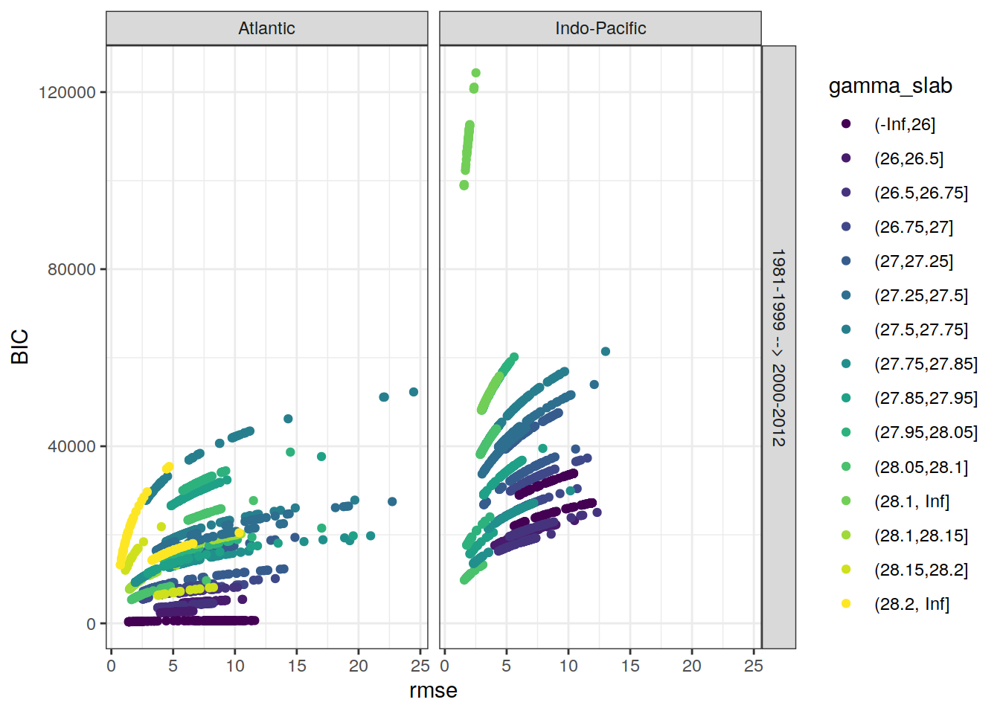
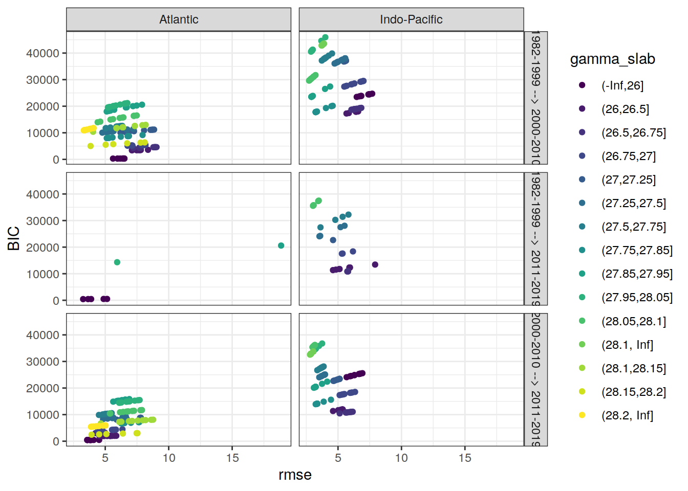
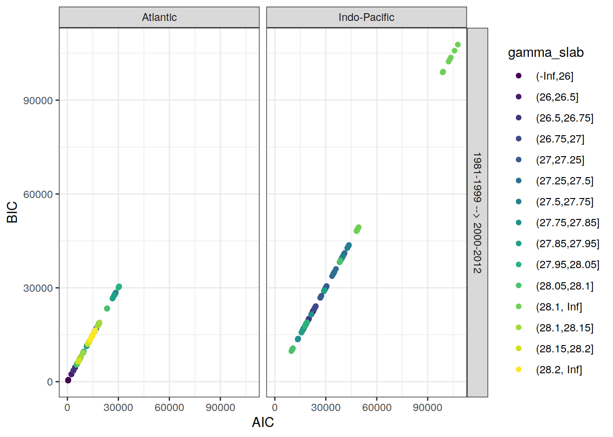

eMLR - model fitting
Jens Daniel Müller
21 March, 2021
Last updated: 2021-03-21
Checks: 7 0
Knit directory: emlr_obs_v_XXX/
This reproducible R Markdown analysis was created with workflowr (version 1.6.2). The Checks tab describes the reproducibility checks that were applied when the results were created. The Past versions tab lists the development history.
Great! Since the R Markdown file has been committed to the Git repository, you know the exact version of the code that produced these results.
Great job! The global environment was empty. Objects defined in the global environment can affect the analysis in your R Markdown file in unknown ways. For reproduciblity it’s best to always run the code in an empty environment.
The command set.seed(20200707) was run prior to running the code in the R Markdown file. Setting a seed ensures that any results that rely on randomness, e.g. subsampling or permutations, are reproducible.
Great job! Recording the operating system, R version, and package versions is critical for reproducibility.
Nice! There were no cached chunks for this analysis, so you can be confident that you successfully produced the results during this run.
Great job! Using relative paths to the files within your workflowr project makes it easier to run your code on other machines.
Great! You are using Git for version control. Tracking code development and connecting the code version to the results is critical for reproducibility.
The results in this page were generated with repository version 30ed6c6. See the Past versions tab to see a history of the changes made to the R Markdown and HTML files.
Note that you need to be careful to ensure that all relevant files for the analysis have been committed to Git prior to generating the results (you can use wflow_publish or wflow_git_commit). workflowr only checks the R Markdown file, but you know if there are other scripts or data files that it depends on. Below is the status of the Git repository when the results were generated:
Ignored files:
Ignored: .Rhistory
Ignored: .Rproj.user/
Unstaged changes:
Modified: code/Workflowr_project_managment.R
Modified: data/auxillary/params_local.rds
Note that any generated files, e.g. HTML, png, CSS, etc., are not included in this status report because it is ok for generated content to have uncommitted changes.
These are the previous versions of the repository in which changes were made to the R Markdown (analysis/eMLR_model_fitting.Rmd) and HTML (docs/eMLR_model_fitting.html) files. If you’ve configured a remote Git repository (see ?wflow_git_remote), click on the hyperlinks in the table below to view the files as they were in that past version.
| File | Version | Author | Date | Message |
|---|---|---|---|---|
| html | 33b385b | jens-daniel-mueller | 2021-03-20 | Build site. |
| Rmd | 6c5618b | jens-daniel-mueller | 2021-03-20 | rerun with vif threshold |
| html | 108d6b2 | jens-daniel-mueller | 2021-03-20 | Build site. |
| Rmd | 2b99ba0 | jens-daniel-mueller | 2021-03-20 | included vif removel option |
| html | 330dcd0 | jens-daniel-mueller | 2021-03-20 | Build site. |
| Rmd | 4df8990 | jens-daniel-mueller | 2021-03-20 | added vif calculation and plots |
| html | 83a13de | jens-daniel-mueller | 2021-03-20 | Build site. |
| html | cf98c6d | jens-daniel-mueller | 2021-03-16 | Build site. |
| html | a1d52ff | jens-daniel-mueller | 2021-03-15 | Build site. |
| html | 0bade3b | jens-daniel-mueller | 2021-03-15 | Build site. |
| html | 27c1f4b | jens-daniel-mueller | 2021-03-14 | Build site. |
| html | af75ebf | jens-daniel-mueller | 2021-03-14 | Build site. |
| html | 5017709 | jens-daniel-mueller | 2021-03-11 | Build site. |
| html | 585b07f | jens-daniel-mueller | 2021-03-11 | Build site. |
| html | 6482ed7 | jens-daniel-mueller | 2021-03-11 | Build site. |
| html | 85a5ed2 | jens-daniel-mueller | 2021-03-10 | Build site. |
| html | 00688a1 | jens-daniel-mueller | 2021-03-05 | Build site. |
| html | 6c0bec6 | jens-daniel-mueller | 2021-03-05 | Build site. |
| html | 3c2ec33 | jens-daniel-mueller | 2021-03-05 | Build site. |
| html | af70b94 | jens-daniel-mueller | 2021-03-04 | Build site. |
| Rmd | c9cf1fd | jens-daniel-mueller | 2021-03-04 | rebuild with NA in Cant replaced by 0 |
| html | 27ae473 | jens-daniel-mueller | 2021-02-24 | Build site. |
| Rmd | 7f77d91 | jens-daniel-mueller | 2021-02-24 | removed log10 color scale |
| html | fec3558 | jens-daniel-mueller | 2021-02-24 | Build site. |
| Rmd | 9ebedac | jens-daniel-mueller | 2021-02-24 | latitudinal residual plots |
| html | 4bc00ea | jens-daniel-mueller | 2021-02-24 | Build site. |
| Rmd | de11bfe | jens-daniel-mueller | 2021-02-24 | clean up purrr approach and residual plots |
| html | 42eca5d | jens-daniel-mueller | 2021-02-24 | Build site. |
| Rmd | 06a2f3b | jens-daniel-mueller | 2021-02-24 | purrr residual plots by basin |
| html | a1ba577 | jens-daniel-mueller | 2021-02-24 | Build site. |
| Rmd | 9ae7d87 | jens-daniel-mueller | 2021-02-24 | loop residual plots by basin |
| html | 071743d | jens-daniel-mueller | 2021-02-24 | Build site. |
| Rmd | c45672c | jens-daniel-mueller | 2021-02-24 | added residual plots |
| html | ac1a836 | jens-daniel-mueller | 2021-02-24 | Build site. |
| Rmd | 5f655e0 | jens-daniel-mueller | 2021-02-24 | added plots back to after switching to map aproach |
| html | b03fbd3 | jens-daniel-mueller | 2021-02-24 | Build site. |
| Rmd | c69736b | jens-daniel-mueller | 2021-02-24 | added plots back to after switching to map aproach |
| html | 86406d5 | jens-daniel-mueller | 2021-02-24 | Build site. |
| Rmd | 1b3c171 | jens-daniel-mueller | 2021-02-24 | introduced purrr::map to model fitting, rebuild all |
| html | 3d3b4cc | jens-daniel-mueller | 2021-02-23 | Build site. |
| Rmd | cbfc388 | jens-daniel-mueller | 2021-02-23 | introduced purrr::map to model fitting |
| html | 7b672f7 | jens-daniel-mueller | 2021-01-11 | Build site. |
| html | 33ba23c | jens-daniel-mueller | 2021-01-07 | Build site. |
| Rmd | 0ad30ba | jens-daniel-mueller | 2021-01-07 | removed GLODAP gamma filter, target variable mapped by eras+era |
| html | 318609d | jens-daniel-mueller | 2020-12-23 | adapted more variable predictor selection |
| html | 9d0b2d0 | jens-daniel-mueller | 2020-12-23 | Build site. |
| html | 0aa2b50 | jens-daniel-mueller | 2020-12-23 | remove html before duplication |
| html | 39113c3 | jens-daniel-mueller | 2020-12-23 | Build site. |
| Rmd | bef9220 | jens-daniel-mueller | 2020-12-23 | rebuild before sensitivity test |
| html | 2886da0 | jens-daniel-mueller | 2020-12-19 | Build site. |
| html | 02f0ee9 | jens-daniel-mueller | 2020-12-18 | cleaned up for copying template |
| html | 965dba3 | jens-daniel-mueller | 2020-12-18 | Build site. |
| html | 5d452fe | jens-daniel-mueller | 2020-12-18 | Build site. |
| Rmd | ca65bf5 | jens-daniel-mueller | 2020-12-18 | rebuild after final cleaning |
| html | 7bcb4eb | jens-daniel-mueller | 2020-12-18 | Build site. |
| html | d397028 | jens-daniel-mueller | 2020-12-18 | Build site. |
| Rmd | 7e1b1c0 | jens-daniel-mueller | 2020-12-18 | rebuild without na predictors |
| html | 7131186 | jens-daniel-mueller | 2020-12-17 | Build site. |
| Rmd | 737d904 | jens-daniel-mueller | 2020-12-17 | rebuild without na predictors |
| html | 22b07fb | jens-daniel-mueller | 2020-12-17 | Build site. |
| html | a84ff3c | jens-daniel-mueller | 2020-12-17 | Build site. |
| Rmd | 40369db | jens-daniel-mueller | 2020-12-17 | model selection criterion added |
| html | 5b48ef5 | jens-daniel-mueller | 2020-12-17 | Build site. |
| Rmd | e6ed2bc | jens-daniel-mueller | 2020-12-17 | plotted model results |
| html | f3a708f | jens-daniel-mueller | 2020-12-17 | Build site. |
| Rmd | 7c8ace9 | jens-daniel-mueller | 2020-12-17 | new MLR fitting routine, rmse corrected |
| html | e4ca289 | jens-daniel-mueller | 2020-12-16 | Build site. |
| Rmd | 3d5a3e2 | jens-daniel-mueller | 2020-12-16 | new MLR fitting routine |
| html | 158fe26 | jens-daniel-mueller | 2020-12-15 | Build site. |
| html | 7a9a4cb | jens-daniel-mueller | 2020-12-15 | Build site. |
| html | 61b263c | jens-daniel-mueller | 2020-12-15 | Build site. |
| html | 4d612dd | jens-daniel-mueller | 2020-12-15 | Build site. |
| html | e91cebd | jens-daniel-mueller | 2020-12-15 | Build site. |
| Rmd | d7992c4 | jens-daniel-mueller | 2020-12-15 | eMLR target variable selection |
| html | 953caf3 | jens-daniel-mueller | 2020-12-15 | Build site. |
| html | 42daf5c | jens-daniel-mueller | 2020-12-14 | Build site. |
| Rmd | 923aa7f | jens-daniel-mueller | 2020-12-14 | rebuild with new path and auto folder creation |
| html | 984697e | jens-daniel-mueller | 2020-12-12 | Build site. |
| html | 3ebff89 | jens-daniel-mueller | 2020-12-12 | Build site. |
| html | ba112d3 | jens-daniel-mueller | 2020-12-11 | Build site. |
| Rmd | 91b2b29 | jens-daniel-mueller | 2020-12-11 | selectable basinmask, try 5 |
| html | b01a367 | jens-daniel-mueller | 2020-12-09 | Build site. |
| Rmd | 71c63b0 | jens-daniel-mueller | 2020-12-09 | rerun with variable predictor assignment |
| html | 24a632f | jens-daniel-mueller | 2020-12-07 | Build site. |
| html | 92dca91 | jens-daniel-mueller | 2020-12-07 | Build site. |
| html | 6a8004b | jens-daniel-mueller | 2020-12-07 | Build site. |
| html | 70bf1a5 | jens-daniel-mueller | 2020-12-07 | Build site. |
| html | 7555355 | jens-daniel-mueller | 2020-12-07 | Build site. |
| html | 143d6fa | jens-daniel-mueller | 2020-12-07 | Build site. |
| html | abc6818 | jens-daniel-mueller | 2020-12-03 | Build site. |
| Rmd | 992ba15 | jens-daniel-mueller | 2020-12-03 | rebuild with variable inventory depth |
| html | c8c2e7b | jens-daniel-mueller | 2020-12-03 | Build site. |
| Rmd | 83203db | jens-daniel-mueller | 2020-12-03 | calculate cant with variable inventory depth |
| html | 090e4d5 | jens-daniel-mueller | 2020-12-02 | Build site. |
| html | 7c25f7a | jens-daniel-mueller | 2020-12-02 | Build site. |
| html | ec8dc38 | jens-daniel-mueller | 2020-12-02 | Build site. |
| html | c987de1 | jens-daniel-mueller | 2020-12-02 | Build site. |
| html | f8358f8 | jens-daniel-mueller | 2020-12-02 | Build site. |
| html | b03ddb8 | jens-daniel-mueller | 2020-12-02 | Build site. |
| Rmd | 9183e8f | jens-daniel-mueller | 2020-12-02 | revised assignment of era to eras |
| html | 22d0127 | jens-daniel-mueller | 2020-12-01 | Build site. |
| html | 0ff728b | jens-daniel-mueller | 2020-12-01 | Build site. |
| html | 91435ae | jens-daniel-mueller | 2020-12-01 | Build site. |
| Rmd | 17d09be | jens-daniel-mueller | 2020-12-01 | auto eras naming |
| html | cf19652 | jens-daniel-mueller | 2020-11-30 | Build site. |
| Rmd | 0895ad6 | jens-daniel-mueller | 2020-11-30 | rebuild with all plot output |
| Rmd | 2842970 | jens-daniel-mueller | 2020-11-30 | cleaned for eMLR part only |
| html | 196be51 | jens-daniel-mueller | 2020-11-30 | Build site. |
| Rmd | 7a4b015 | jens-daniel-mueller | 2020-11-30 | first rebuild on ETH server |
| Rmd | bc61ce3 | Jens Müller | 2020-11-30 | Initial commit |
1 Required data
Required are:
- cleaned and prepared GLODAPv2_2020 file
GLODAP <-
read_csv(paste(path_version_data,
"GLODAPv2.2020_MLR_fitting_ready.csv",
sep = ""))2 Predictor combinations
Find all possible combinations of following considered predictor variables:
- sal, temp, aou, nitrate, silicate, phosphate, phosphate_star
# the following code is a workaround to find all predictor combinations
# using the olsrr package and fit all models for one era, slab, and basin
i_basin <- unique(GLODAP$basin)[1]
i_era <- unique(GLODAP$era)[1]
# subset one basin and era for fitting
GLODAP_basin_era <- GLODAP %>%
filter(basin == i_basin, era == i_era)
i_gamma_slab <- unique(GLODAP_basin_era$gamma_slab)[1]
print(i_gamma_slab)
# subset one gamma slab
GLODAP_basin_era_slab <- GLODAP_basin_era %>%
filter(gamma_slab == i_gamma_slab)
# fit the full linear model, i.e. all predictor combinations
lm_full <- lm(paste(
params_local$MLR_target,
paste(params_local$MLR_predictors, collapse = " + "),
sep = " ~ "
),
data = GLODAP_basin_era_slab)
# fit linear models for all possible predictor combinations
# unfortunately, this functions does not provide model coefficients (yet)
lm_all <- ols_step_all_possible(lm_full)
# convert to tibble
lm_all <- as_tibble(lm_all)
# format model formula
lm_all <- lm_all %>%
select(n, predictors) %>%
mutate(model = str_replace_all(predictors, " ", " + "),
model = paste(params_local$MLR_target, "~", model))
# remove helper objects
rm(i_gamma_slab,
i_era,
i_basin,
GLODAP_basin_era,
GLODAP_basin_era_slab,
lm_full)3 Apply predictor threshold
Select combinations with a total number of predictors in the range:
- Minimum: 2
- Maximum: 5
lm_all <- lm_all %>%
filter(n >= params_local$MLR_predictors_min,
n <= params_local$MLR_predictors_max)This results in a total number of MLR models of:
- 112
4 Fit all models
Individual linear regression models were fitted for the chosen target variable:
- cstar_tref
as a function of each predictor combination. Fitting was performed separately within each basin, era, and slab. Model diagnostics, such as the root mean squared error (RMSE), were calculated for each fitted model.
# prepare nested data frame
GLODAP %>%
# filter(basin %in% unique(GLODAP$basin)[1],
# era %in% unique(GLODAP$era)[c(1,2)],
# gamma_slab %in% unique(GLODAP$gamma_slab)[c(5,6)]) %>%
filter_all(any_vars(is.na(.)))
GLODAP_nested <- GLODAP %>%
# filter(basin %in% unique(GLODAP$basin)[1],
# era %in% unique(GLODAP$era)[c(1,2)],
# gamma_slab %in% unique(GLODAP$gamma_slab)[c(5,6)]) %>%
group_by(gamma_slab, era, basin) %>%
nest()
# expand with model definitions
GLODAP_nested_lm <- expand_grid(
GLODAP_nested,
lm_all
)
# fit models and extract tidy model output
GLODAP_nested_lm_fit <- GLODAP_nested_lm %>%
mutate(
fit = map2(.x = data, .y = model,
~ lm(as.formula(.y), data = .x)),
tidied = map(fit, tidy),
glanced = map(fit, glance),
augmented = map(fit, augment),
vif = map(fit, ols_vif_tol)
)
# print(object.size(GLODAP_nested), units = "MB")
# print(object.size(GLODAP_nested_lm), units = "MB")
# print(object.size(GLODAP_nested_lm_fit), units = "MB")5 Tidy models
# extract glanced model output (model diagnostics, such as AIC)
GLODAP_glanced <- GLODAP_nested_lm_fit %>%
select(-c(data, fit, tidied, augmented, vif)) %>%
unnest(glanced) %>%
rename(n_predictors = n)
# extract tidy model output (model coefficients)
GLODAP_tidy <- GLODAP_nested_lm_fit %>%
select(-c(data, fit, glanced, augmented, vif)) %>%
unnest(tidied)
# extract augmented model output (fitted values and residuals)
GLODAP_augmented <- GLODAP_nested_lm_fit %>%
select(-c(data, fit, tidied, glanced, vif)) %>%
unnest(augmented)
# print(object.size(GLODAP_augmented), units = "MB")
# extract VIC from output
GLODAP_glanced_vif <- GLODAP_nested_lm_fit %>%
select(-c(data, fit, tidied, augmented, glanced)) %>%
unnest(vif)
# calculte max vif per model
GLODAP_glanced_vif_max <- GLODAP_glanced_vif %>%
group_by(era, basin, gamma_slab, model, n) %>%
summarise(vif_max = max(VIF)) %>%
ungroup()
# calculate RMSE from augmented output
GLODAP_glanced_rmse <- GLODAP_augmented %>%
group_by(gamma_slab, era, basin, model) %>%
summarise(rmse = sqrt(c(crossprod(.resid)) / length(.resid))) %>%
ungroup()
# add RMSE and vif_max to glanced output
GLODAP_glanced <- full_join(GLODAP_glanced, GLODAP_glanced_rmse)
GLODAP_glanced <- full_join(GLODAP_glanced, GLODAP_glanced_vif_max)
rm(GLODAP_glanced_rmse)
rm(GLODAP_glanced_vif_max)
# extract input data
GLODAP_data <- GLODAP_nested_lm_fit %>%
select(-c(fit, tidied, glanced, augmented, vif)) %>%
unnest(data)
# append input data with augmented data
GLODAP_augmented <- bind_cols(
GLODAP_data,
GLODAP_augmented %>% select(.fitted, .resid)
)
rm(GLODAP, GLODAP_nested, GLODAP_nested_lm, GLODAP_nested_lm_fit, lm_all,
GLODAP_data)6 Prepare coeffcients
Coefficients are prepared for the mapping of Cant and the chosen target variable.
6.1 VIF threshold
To avoid multicollinearity among predictors, models were excluded with a VIF above:
- 5
After removing models affected by multicollinearity, the targeted number of MLRs (10) was undercut in following fitting units:
GLODAP_glanced_clean <- GLODAP_glanced %>%
filter(vif_max <= params_local$vif_max)
GLODAP_glanced_clean %>%
group_by(era, basin, gamma_slab) %>%
count() %>%
filter(n < params_local$MLR_number)# A tibble: 5 x 4
# Groups: era, basin, gamma_slab [5]
era basin gamma_slab n
<chr> <chr> <chr> <int>
1 1982-1999 Atlantic (28.05,28.1] 9
2 1982-1999 Atlantic (28.1,28.15] 6
3 1982-1999 Atlantic (28.15,28.2] 6
4 2011-2019 Atlantic (28.1,28.15] 6
5 2011-2019 Atlantic (28.15,28.2] 56.2 Predictor selection
Within each basin and slab, the following number of best linear regression models was selected:
- 10
The criterion used to select the best models was:
- rmse
The criterion was summed up for two adjacent eras, and the models with lowest summed values were selected.
# calculate RMSE sum for adjacent eras
lm_all_eras <- GLODAP_glanced_clean %>%
select(basin, gamma_slab, model, era, AIC, BIC, rmse) %>%
arrange(era) %>%
group_by(basin, gamma_slab, model) %>%
mutate(eras = paste(lag(era), era, sep = " --> "),
rmse_sum = rmse + lag(rmse),
aic_sum = AIC + lag(AIC),
bic_sum = BIC + lag(BIC)
) %>%
ungroup() %>%
select(-c(era)) %>%
drop_na()
# subset models with lowest summed criterion
# chose which criterion is applied
if (params_local$MLR_criterion == "aic") {
lm_best_eras <- lm_all_eras %>%
group_by(basin, gamma_slab, eras) %>%
slice_min(order_by = aic_sum,
with_ties = FALSE,
n = params_local$MLR_number) %>%
ungroup() %>%
arrange(basin, gamma_slab, eras, model)
}
if (params_local$MLR_criterion == "bic") {
lm_best_eras <- lm_all_eras %>%
group_by(basin, gamma_slab, eras) %>%
slice_min(order_by = bic_sum,
with_ties = FALSE,
n = params_local$MLR_number) %>%
ungroup() %>%
arrange(basin, gamma_slab, eras, model)
}
if (params_local$MLR_criterion == "rmse") {
lm_best_eras <- lm_all_eras %>%
group_by(basin, gamma_slab, eras) %>%
slice_min(order_by = rmse_sum,
with_ties = FALSE,
n = params_local$MLR_number) %>%
ungroup() %>%
arrange(basin, gamma_slab, eras, model)
}
# print table
lm_best_eras %>%
kable() %>%
add_header_above() %>%
kable_styling() %>%
scroll_box(width = "100%", height = "400px")| basin | gamma_slab | model | AIC | BIC | rmse | eras | rmse_sum | aic_sum | bic_sum |
|---|---|---|---|---|---|---|---|---|---|
| Atlantic | (-Inf,26] | cstar_tref ~ aou + phosphate | 312.1128 | 319.2496 | 7.666722 | 1982-1999 –> 2000-2010 | 15.246726 | 919.4475 | 936.4479 |
| Atlantic | (-Inf,26] | cstar_tref ~ aou + phosphate_star | 314.3798 | 321.5165 | 7.866786 | 1982-1999 –> 2000-2010 | 15.996932 | 933.9058 | 950.9062 |
| Atlantic | (-Inf,26] | cstar_tref ~ aou + silicate | 315.5769 | 322.7137 | 7.974538 | 1982-1999 –> 2000-2010 | 16.375144 | 940.7971 | 957.7975 |
| Atlantic | (-Inf,26] | cstar_tref ~ sal + aou | 315.5847 | 322.7215 | 7.975244 | 1982-1999 –> 2000-2010 | 16.771268 | 948.8082 | 965.8086 |
| Atlantic | (-Inf,26] | cstar_tref ~ sal + aou + silicate | 317.5154 | 326.4363 | 7.968965 | 1982-1999 –> 2000-2010 | 16.282552 | 942.9238 | 964.1743 |
| Atlantic | (-Inf,26] | cstar_tref ~ temp + aou + phosphate | 299.2832 | 308.2041 | 6.477729 | 1982-1999 –> 2000-2010 | 12.921248 | 880.3535 | 901.6040 |
| Atlantic | (-Inf,26] | cstar_tref ~ temp + aou + phosphate_star | 299.5667 | 308.4876 | 6.498632 | 1982-1999 –> 2000-2010 | 12.900270 | 879.5023 | 900.7528 |
| Atlantic | (-Inf,26] | cstar_tref ~ temp + aou + silicate | 314.5029 | 323.4239 | 7.700784 | 1982-1999 –> 2000-2010 | 15.898667 | 937.4727 | 958.7232 |
| Atlantic | (-Inf,26] | cstar_tref ~ temp + nitrate + phosphate_star | 306.9981 | 315.9191 | 7.071269 | 1982-1999 –> 2000-2010 | 14.693468 | 917.2987 | 938.5492 |
| Atlantic | (-Inf,26] | cstar_tref ~ temp + silicate + phosphate_star | 303.0007 | 311.9216 | 6.757242 | 1982-1999 –> 2000-2010 | 15.943660 | 945.7803 | 967.0308 |
| Atlantic | (-Inf,26] | cstar_tref ~ aou + silicate + phosphate | 449.9971 | 461.8443 | 3.919065 | 1982-1999 –> 2011-2019 | 11.347104 | 1055.8080 | 1079.9847 |
| Atlantic | (-Inf,26] | cstar_tref ~ aou + silicate + phosphate_star | 459.1175 | 470.9648 | 4.151948 | 1982-1999 –> 2011-2019 | 12.033565 | 1075.2416 | 1099.4184 |
| Atlantic | (-Inf,26] | cstar_tref ~ nitrate + silicate + phosphate | 484.6006 | 496.4478 | 4.878621 | 1982-1999 –> 2011-2019 | 15.027300 | 1144.7137 | 1168.8904 |
| Atlantic | (-Inf,26] | cstar_tref ~ sal + silicate + phosphate | 517.6371 | 529.4843 | 6.013184 | 1982-1999 –> 2011-2019 | 16.939736 | 1190.6004 | 1214.7772 |
| Atlantic | (-Inf,26] | cstar_tref ~ temp + aou + silicate + phosphate | 438.9488 | 453.1655 | 3.608417 | 1982-1999 –> 2011-2019 | 9.685459 | 1011.8303 | 1040.8424 |
| Atlantic | (-Inf,26] | cstar_tref ~ temp + aou + silicate + phosphate_star | 438.2512 | 452.4679 | 3.592521 | 1982-1999 –> 2011-2019 | 9.647156 | 1010.4900 | 1039.5021 |
| Atlantic | (-Inf,26] | cstar_tref ~ temp + nitrate + phosphate | 500.3648 | 512.2120 | 5.390489 | 1982-1999 –> 2011-2019 | 15.019191 | 1151.3263 | 1175.5031 |
| Atlantic | (-Inf,26] | cstar_tref ~ temp + nitrate + silicate + phosphate | 485.5291 | 499.7458 | 4.845650 | 1982-1999 –> 2011-2019 | 13.830186 | 1126.4423 | 1155.4544 |
| Atlantic | (-Inf,26] | cstar_tref ~ temp + nitrate + silicate + phosphate_star | 458.7462 | 472.9629 | 4.090098 | 1982-1999 –> 2011-2019 | 11.423374 | 1064.3230 | 1093.3351 |
| Atlantic | (-Inf,26] | cstar_tref ~ temp + silicate + phosphate | 528.5943 | 540.4415 | 6.444993 | 1982-1999 –> 2011-2019 | 17.642595 | 1205.8213 | 1229.9981 |
| Atlantic | (-Inf,26] | cstar_tref ~ aou + phosphate | 451.1560 | 460.6337 | 3.998207 | 2000-2010 –> 2011-2019 | 11.664929 | 763.2688 | 779.8833 |
| Atlantic | (-Inf,26] | cstar_tref ~ aou + phosphate_star | 460.3325 | 469.8102 | 4.237295 | 2000-2010 –> 2011-2019 | 12.104081 | 774.7122 | 791.3268 |
| Atlantic | (-Inf,26] | cstar_tref ~ nitrate + silicate + phosphate_star | 471.6640 | 483.5112 | 4.495088 | 2000-2010 –> 2011-2019 | 12.268242 | 786.9901 | 807.7582 |
| Atlantic | (-Inf,26] | cstar_tref ~ sal + aou + phosphate | 452.5254 | 464.3727 | 3.982283 | 2000-2010 –> 2011-2019 | 10.961880 | 758.3752 | 779.1434 |
| Atlantic | (-Inf,26] | cstar_tref ~ silicate + phosphate + phosphate_star | 468.7136 | 480.5608 | 4.411929 | 2000-2010 –> 2011-2019 | 12.141301 | 783.5426 | 804.3108 |
| Atlantic | (-Inf,26] | cstar_tref ~ temp + aou + phosphate | 447.1772 | 459.0244 | 3.849741 | 2000-2010 –> 2011-2019 | 10.327470 | 746.4604 | 767.2285 |
| Atlantic | (-Inf,26] | cstar_tref ~ temp + aou + phosphate_star | 445.9748 | 457.8220 | 3.820554 | 2000-2010 –> 2011-2019 | 10.319185 | 745.5414 | 766.3096 |
| Atlantic | (-Inf,26] | cstar_tref ~ temp + aou + silicate | 475.3112 | 487.1584 | 4.600059 | 2000-2010 –> 2011-2019 | 12.300842 | 789.8141 | 810.5823 |
| Atlantic | (-Inf,26] | cstar_tref ~ temp + nitrate + phosphate_star | 462.4333 | 474.2805 | 4.240000 | 2000-2010 –> 2011-2019 | 11.311269 | 769.4314 | 790.1996 |
| Atlantic | (-Inf,26] | cstar_tref ~ temp + silicate + phosphate_star | 471.6090 | 483.4562 | 4.493524 | 2000-2010 –> 2011-2019 | 11.250766 | 774.6097 | 795.3779 |
| Atlantic | (26,26.5] | cstar_tref ~ aou + phosphate | 3408.9885 | 3425.8709 | 7.111874 | 1982-1999 –> 2000-2010 | 12.122435 | 6598.9993 | 6632.9352 |
| Atlantic | (26,26.5] | cstar_tref ~ aou + phosphate_star | 3459.1532 | 3476.0355 | 7.475502 | 1982-1999 –> 2000-2010 | 12.754517 | 6703.9653 | 6737.9012 |
| Atlantic | (26,26.5] | cstar_tref ~ nitrate + phosphate_star | 3502.0430 | 3518.9254 | 7.801104 | 1982-1999 –> 2000-2010 | 13.166226 | 6763.8436 | 6797.7795 |
| Atlantic | (26,26.5] | cstar_tref ~ phosphate + phosphate_star | 3482.2075 | 3499.0899 | 7.648795 | 1982-1999 –> 2000-2010 | 13.080451 | 6756.9493 | 6790.8853 |
| Atlantic | (26,26.5] | cstar_tref ~ sal + aou | 3616.4703 | 3633.3526 | 8.740873 | 1982-1999 –> 2000-2010 | 15.036509 | 7046.2052 | 7080.1412 |
| Atlantic | (26,26.5] | cstar_tref ~ sal + aou + silicate | 3574.8158 | 3595.9187 | 8.369682 | 1982-1999 –> 2000-2010 | 14.488487 | 6976.6364 | 7019.0564 |
| Atlantic | (26,26.5] | cstar_tref ~ sal + nitrate | 3643.0321 | 3659.9145 | 8.974735 | 1982-1999 –> 2000-2010 | 15.381109 | 7091.0756 | 7125.0116 |
| Atlantic | (26,26.5] | cstar_tref ~ sal + phosphate | 3642.1670 | 3659.0494 | 8.967021 | 1982-1999 –> 2000-2010 | 15.403928 | 7095.2030 | 7129.1390 |
| Atlantic | (26,26.5] | cstar_tref ~ silicate + phosphate_star | 3496.5761 | 3513.4585 | 7.758825 | 1982-1999 –> 2000-2010 | 13.654008 | 6857.3039 | 6891.2399 |
| Atlantic | (26,26.5] | cstar_tref ~ temp + aou + silicate | 3562.5743 | 3583.6773 | 8.268453 | 1982-1999 –> 2000-2010 | 14.839977 | 7039.3428 | 7081.7628 |
| Atlantic | (26,26.5] | cstar_tref ~ aou + nitrate | 2023.3475 | 2038.3705 | 5.870281 | 2000-2010 –> 2011-2019 | 12.643137 | 5383.2002 | 5415.1055 |
| Atlantic | (26,26.5] | cstar_tref ~ aou + phosphate | 1883.1589 | 1898.1819 | 4.702457 | 2000-2010 –> 2011-2019 | 11.814331 | 5292.1475 | 5324.0528 |
| Atlantic | (26,26.5] | cstar_tref ~ aou + phosphate_star | 1941.5008 | 1956.5238 | 5.157223 | 2000-2010 –> 2011-2019 | 12.632725 | 5400.6540 | 5432.5593 |
| Atlantic | (26,26.5] | cstar_tref ~ aou + silicate | 2016.9973 | 2032.0202 | 5.811592 | 2000-2010 –> 2011-2019 | 14.438859 | 5620.3067 | 5652.2120 |
| Atlantic | (26,26.5] | cstar_tref ~ nitrate + phosphate_star | 1975.3447 | 1990.3677 | 5.440923 | 2000-2010 –> 2011-2019 | 13.242026 | 5477.3877 | 5509.2930 |
| Atlantic | (26,26.5] | cstar_tref ~ phosphate + phosphate_star | 1966.4535 | 1981.4764 | 5.364914 | 2000-2010 –> 2011-2019 | 13.013708 | 5448.6610 | 5480.5663 |
| Atlantic | (26,26.5] | cstar_tref ~ sal + aou | 2087.6523 | 2102.6752 | 6.499014 | 2000-2010 –> 2011-2019 | 15.239887 | 5704.1225 | 5736.0279 |
| Atlantic | (26,26.5] | cstar_tref ~ sal + phosphate | 2098.4940 | 2113.5169 | 6.611464 | 2000-2010 –> 2011-2019 | 15.578485 | 5740.6610 | 5772.5663 |
| Atlantic | (26,26.5] | cstar_tref ~ sal + silicate | 2096.2315 | 2111.2544 | 6.587838 | 2000-2010 –> 2011-2019 | 15.561533 | 5739.1470 | 5771.0523 |
| Atlantic | (26,26.5] | cstar_tref ~ silicate + phosphate_star | 2009.7742 | 2024.7972 | 5.745550 | 2000-2010 –> 2011-2019 | 13.504376 | 5506.3503 | 5538.2556 |
| Atlantic | (26.5,26.75] | cstar_tref ~ aou + phosphate_star | 4395.0200 | 4412.8219 | 7.739384 | 1982-1999 –> 2000-2010 | 12.613973 | 8985.5586 | 9021.9095 |
| Atlantic | (26.5,26.75] | cstar_tref ~ nitrate + phosphate_star | 4401.8498 | 4419.6516 | 7.781249 | 1982-1999 –> 2000-2010 | 12.624618 | 8982.5837 | 9018.9346 |
| Atlantic | (26.5,26.75] | cstar_tref ~ phosphate + phosphate_star | 4403.8469 | 4421.6487 | 7.793534 | 1982-1999 –> 2000-2010 | 12.724154 | 9011.8265 | 9048.1774 |
| Atlantic | (26.5,26.75] | cstar_tref ~ sal + aou | 4577.5941 | 4595.3960 | 8.939999 | 1982-1999 –> 2000-2010 | 14.554103 | 9383.6746 | 9420.0255 |
| Atlantic | (26.5,26.75] | cstar_tref ~ sal + nitrate | 4569.0258 | 4586.8277 | 8.879697 | 1982-1999 –> 2000-2010 | 14.508524 | 9379.1029 | 9415.4538 |
| Atlantic | (26.5,26.75] | cstar_tref ~ sal + phosphate | 4556.3213 | 4574.1232 | 8.791034 | 1982-1999 –> 2000-2010 | 14.432589 | 9369.8454 | 9406.1963 |
| Atlantic | (26.5,26.75] | cstar_tref ~ sal + silicate | 4576.3753 | 4594.1771 | 8.931396 | 1982-1999 –> 2000-2010 | 14.573160 | 9389.9556 | 9426.3066 |
| Atlantic | (26.5,26.75] | cstar_tref ~ silicate + phosphate_star | 4385.4830 | 4403.2849 | 7.681301 | 1982-1999 –> 2000-2010 | 12.736446 | 9031.5235 | 9067.8744 |
| Atlantic | (26.5,26.75] | cstar_tref ~ temp + nitrate | 4611.0346 | 4628.8365 | 9.179289 | 1982-1999 –> 2000-2010 | 15.270671 | 9541.6260 | 9577.9770 |
| Atlantic | (26.5,26.75] | cstar_tref ~ temp + phosphate | 4591.6524 | 4609.4543 | 9.039827 | 1982-1999 –> 2000-2010 | 15.143911 | 9525.4226 | 9561.7735 |
| Atlantic | (26.5,26.75] | cstar_tref ~ aou + phosphate | 3012.3900 | 3029.4436 | 4.230775 | 2000-2010 –> 2011-2019 | 11.445751 | 7318.5832 | 7353.4387 |
| Atlantic | (26.5,26.75] | cstar_tref ~ aou + phosphate_star | 3045.1473 | 3062.2009 | 4.364845 | 2000-2010 –> 2011-2019 | 12.104230 | 7440.1673 | 7475.0228 |
| Atlantic | (26.5,26.75] | cstar_tref ~ nitrate + phosphate_star | 3042.5982 | 3059.6517 | 4.354261 | 2000-2010 –> 2011-2019 | 12.135510 | 7444.4479 | 7479.3034 |
| Atlantic | (26.5,26.75] | cstar_tref ~ phosphate + phosphate_star | 3044.0817 | 3061.1353 | 4.360418 | 2000-2010 –> 2011-2019 | 12.153951 | 7447.9286 | 7482.7840 |
| Atlantic | (26.5,26.75] | cstar_tref ~ sal + aou | 3184.6403 | 3201.6939 | 4.984999 | 2000-2010 –> 2011-2019 | 13.924998 | 7762.2344 | 7797.0899 |
| Atlantic | (26.5,26.75] | cstar_tref ~ sal + nitrate | 3144.7785 | 3161.8321 | 4.799297 | 2000-2010 –> 2011-2019 | 13.678995 | 7713.8043 | 7748.6598 |
| Atlantic | (26.5,26.75] | cstar_tref ~ sal + phosphate | 3144.2815 | 3161.3351 | 4.797026 | 2000-2010 –> 2011-2019 | 13.588060 | 7700.6028 | 7735.4583 |
| Atlantic | (26.5,26.75] | cstar_tref ~ sal + silicate | 3107.6688 | 3124.7224 | 4.632640 | 2000-2010 –> 2011-2019 | 13.564036 | 7684.0440 | 7718.8995 |
| Atlantic | (26.5,26.75] | cstar_tref ~ silicate + phosphate_star | 3032.1721 | 3049.2257 | 4.311239 | 2000-2010 –> 2011-2019 | 11.992540 | 7417.6551 | 7452.5106 |
| Atlantic | (26.5,26.75] | cstar_tref ~ temp + phosphate | 3182.2106 | 3199.2641 | 4.973477 | 2000-2010 –> 2011-2019 | 14.013303 | 7773.8630 | 7808.7185 |
| Atlantic | (26.75,27] | cstar_tref ~ aou + phosphate | 5109.3130 | 5127.8777 | 6.759171 | 1982-1999 –> 2000-2010 | 11.971573 | 10735.3753 | 10773.2157 |
| Atlantic | (26.75,27] | cstar_tref ~ aou + phosphate_star | 5185.4638 | 5204.0285 | 7.103638 | 1982-1999 –> 2000-2010 | 12.786062 | 10969.5230 | 11007.3634 |
| Atlantic | (26.75,27] | cstar_tref ~ nitrate + phosphate_star | 5185.3757 | 5203.9405 | 7.103230 | 1982-1999 –> 2000-2010 | 12.768210 | 10963.8087 | 11001.6491 |
| Atlantic | (26.75,27] | cstar_tref ~ phosphate + phosphate_star | 5176.9117 | 5195.4764 | 7.064094 | 1982-1999 –> 2000-2010 | 12.770937 | 10968.8181 | 11006.6585 |
| Atlantic | (26.75,27] | cstar_tref ~ sal + aou | 5399.8113 | 5418.3761 | 8.170422 | 1982-1999 –> 2000-2010 | 15.107946 | 11549.0780 | 11586.9184 |
| Atlantic | (26.75,27] | cstar_tref ~ sal + nitrate | 5361.1556 | 5379.7203 | 7.966844 | 1982-1999 –> 2000-2010 | 14.902964 | 11510.0521 | 11547.8925 |
| Atlantic | (26.75,27] | cstar_tref ~ sal + phosphate | 5340.8566 | 5359.4214 | 7.861979 | 1982-1999 –> 2000-2010 | 14.775816 | 11483.8643 | 11521.7047 |
| Atlantic | (26.75,27] | cstar_tref ~ sal + silicate | 5377.9769 | 5396.5416 | 8.054801 | 1982-1999 –> 2000-2010 | 14.977650 | 11523.3685 | 11561.2089 |
| Atlantic | (26.75,27] | cstar_tref ~ silicate + phosphate_star | 5194.1318 | 5212.6965 | 7.143944 | 1982-1999 –> 2000-2010 | 12.837072 | 10981.6350 | 11019.4755 |
| Atlantic | (26.75,27] | cstar_tref ~ temp + phosphate | 5471.8102 | 5490.3749 | 8.563570 | 1982-1999 –> 2000-2010 | 16.213727 | 11800.0166 | 11837.8570 |
| Atlantic | (26.75,27] | cstar_tref ~ aou + phosphate | 3966.9860 | 3985.0744 | 4.446337 | 2000-2010 –> 2011-2019 | 11.205508 | 9076.2990 | 9112.9521 |
| Atlantic | (26.75,27] | cstar_tref ~ aou + phosphate_star | 4057.9140 | 4076.0024 | 4.753777 | 2000-2010 –> 2011-2019 | 11.857415 | 9243.3778 | 9280.0309 |
| Atlantic | (26.75,27] | cstar_tref ~ nitrate + phosphate_star | 4065.5172 | 4083.6055 | 4.780428 | 2000-2010 –> 2011-2019 | 11.883657 | 9250.8929 | 9287.5460 |
| Atlantic | (26.75,27] | cstar_tref ~ phosphate + phosphate_star | 4051.6063 | 4069.6946 | 4.731780 | 2000-2010 –> 2011-2019 | 11.795873 | 9228.5180 | 9265.1711 |
| Atlantic | (26.75,27] | cstar_tref ~ sal + aou | 4338.5304 | 4356.6188 | 5.843179 | 2000-2010 –> 2011-2019 | 14.013601 | 9738.3418 | 9774.9949 |
| Atlantic | (26.75,27] | cstar_tref ~ sal + nitrate | 4318.9258 | 4337.0141 | 5.759553 | 2000-2010 –> 2011-2019 | 13.726396 | 9680.0814 | 9716.7345 |
| Atlantic | (26.75,27] | cstar_tref ~ sal + phosphate | 4290.1636 | 4308.2519 | 5.639025 | 2000-2010 –> 2011-2019 | 13.501004 | 9631.0202 | 9667.6733 |
| Atlantic | (26.75,27] | cstar_tref ~ sal + silicate | 4265.2889 | 4283.3773 | 5.536823 | 2000-2010 –> 2011-2019 | 13.591624 | 9643.2658 | 9679.9189 |
| Atlantic | (26.75,27] | cstar_tref ~ silicate + phosphate_star | 4032.0811 | 4050.1694 | 4.664332 | 2000-2010 –> 2011-2019 | 11.808276 | 9226.2128 | 9262.8659 |
| Atlantic | (26.75,27] | cstar_tref ~ temp + phosphate | 4390.9173 | 4409.0057 | 6.072648 | 2000-2010 –> 2011-2019 | 14.636219 | 9862.7275 | 9899.3806 |
| Atlantic | (27,27.25] | cstar_tref ~ aou + phosphate | 10082.4650 | 10103.8568 | 6.200383 | 1982-1999 –> 2000-2010 | 12.930511 | 22341.7272 | 22385.1934 |
| Atlantic | (27,27.25] | cstar_tref ~ aou + phosphate_star | 10345.1147 | 10366.5065 | 6.747507 | 1982-1999 –> 2000-2010 | 14.086861 | 22923.6206 | 22967.0868 |
| Atlantic | (27,27.25] | cstar_tref ~ nitrate + phosphate_star | 10413.1202 | 10434.5119 | 6.896872 | 1982-1999 –> 2000-2010 | 14.362372 | 23054.4072 | 23097.8734 |
| Atlantic | (27,27.25] | cstar_tref ~ phosphate + phosphate_star | 10270.3772 | 10291.7690 | 6.587084 | 1982-1999 –> 2000-2010 | 13.841727 | 22806.1145 | 22849.5807 |
| Atlantic | (27,27.25] | cstar_tref ~ sal + aou | 11307.2048 | 11328.5966 | 9.197440 | 1982-1999 –> 2000-2010 | 18.408265 | 24722.4519 | 24765.9181 |
| Atlantic | (27,27.25] | cstar_tref ~ sal + nitrate | 11087.4700 | 11108.8618 | 8.569248 | 1982-1999 –> 2000-2010 | 17.649907 | 24450.2842 | 24493.7504 |
| Atlantic | (27,27.25] | cstar_tref ~ sal + phosphate | 10896.8382 | 10918.2300 | 8.059122 | 1982-1999 –> 2000-2010 | 16.827765 | 24130.8425 | 24174.3087 |
| Atlantic | (27,27.25] | cstar_tref ~ sal + silicate | 11186.9484 | 11208.3402 | 8.848144 | 1982-1999 –> 2000-2010 | 17.765096 | 24482.7409 | 24526.2071 |
| Atlantic | (27,27.25] | cstar_tref ~ silicate + phosphate_star | 10574.8220 | 10596.2137 | 7.265441 | 1982-1999 –> 2000-2010 | 14.729558 | 23215.4261 | 23258.8924 |
| Atlantic | (27,27.25] | cstar_tref ~ temp + phosphate | 11135.5852 | 11156.9770 | 8.703028 | 1982-1999 –> 2000-2010 | 18.338647 | 24716.9335 | 24760.3997 |
| Atlantic | (27,27.25] | cstar_tref ~ aou + phosphate | 8077.7009 | 8098.2659 | 5.904516 | 2000-2010 –> 2011-2019 | 12.104898 | 18160.1659 | 18202.1227 |
| Atlantic | (27,27.25] | cstar_tref ~ aou + phosphate_star | 8281.5169 | 8302.0819 | 6.400683 | 2000-2010 –> 2011-2019 | 13.148190 | 18626.6317 | 18668.5884 |
| Atlantic | (27,27.25] | cstar_tref ~ nitrate + phosphate_star | 8393.0132 | 8413.5782 | 6.689533 | 2000-2010 –> 2011-2019 | 13.586405 | 18806.1334 | 18848.0902 |
| Atlantic | (27,27.25] | cstar_tref ~ phosphate + phosphate_star | 8232.5379 | 8253.1029 | 6.277769 | 2000-2010 –> 2011-2019 | 12.864854 | 18502.9152 | 18544.8719 |
| Atlantic | (27,27.25] | cstar_tref ~ sal + aou | 9035.7305 | 9056.2955 | 8.627760 | 2000-2010 –> 2011-2019 | 17.825200 | 20342.9354 | 20384.8921 |
| Atlantic | (27,27.25] | cstar_tref ~ sal + nitrate | 8940.5658 | 8961.1308 | 8.308763 | 2000-2010 –> 2011-2019 | 16.878011 | 20028.0358 | 20069.9926 |
| Atlantic | (27,27.25] | cstar_tref ~ sal + phosphate | 8763.1444 | 8783.7094 | 7.745195 | 2000-2010 –> 2011-2019 | 15.804317 | 19659.9826 | 19701.9394 |
| Atlantic | (27,27.25] | cstar_tref ~ sal + silicate | 8781.3234 | 8801.8884 | 7.801137 | 2000-2010 –> 2011-2019 | 16.649281 | 19968.2718 | 20010.2286 |
| Atlantic | (27,27.25] | cstar_tref ~ silicate + phosphate_star | 8315.2910 | 8335.8559 | 6.486838 | 2000-2010 –> 2011-2019 | 13.752280 | 18890.1129 | 18932.0697 |
| Atlantic | (27,27.25] | cstar_tref ~ temp + phosphate | 8901.8731 | 8922.4381 | 8.182462 | 2000-2010 –> 2011-2019 | 16.885489 | 20037.4583 | 20079.4151 |
| Atlantic | (27.25,27.5] | cstar_tref ~ aou + nitrate | 11422.8627 | 11444.5713 | 7.216146 | 1982-1999 –> 2000-2010 | 14.081831 | 26646.0801 | 26690.7059 |
| Atlantic | (27.25,27.5] | cstar_tref ~ aou + phosphate | 10033.2793 | 10054.9879 | 4.773122 | 1982-1999 –> 2000-2010 | 9.831122 | 23866.7890 | 23911.4147 |
| Atlantic | (27.25,27.5] | cstar_tref ~ aou + phosphate_star | 10534.1649 | 10555.8734 | 5.539947 | 1982-1999 –> 2000-2010 | 11.471321 | 25092.1006 | 25136.7263 |
| Atlantic | (27.25,27.5] | cstar_tref ~ nitrate + phosphate_star | 10607.3980 | 10629.1066 | 5.661946 | 1982-1999 –> 2000-2010 | 11.522016 | 25110.3297 | 25154.9554 |
| Atlantic | (27.25,27.5] | cstar_tref ~ phosphate + phosphate_star | 10317.5783 | 10339.2869 | 5.194306 | 1982-1999 –> 2000-2010 | 10.869546 | 24674.7516 | 24719.3774 |
| Atlantic | (27.25,27.5] | cstar_tref ~ sal + nitrate | 11673.1169 | 11694.8254 | 7.773785 | 1982-1999 –> 2000-2010 | 16.223952 | 27840.7284 | 27885.3541 |
| Atlantic | (27.25,27.5] | cstar_tref ~ sal + phosphate | 11194.8901 | 11216.5987 | 6.743050 | 1982-1999 –> 2000-2010 | 14.658345 | 27065.1109 | 27109.7367 |
| Atlantic | (27.25,27.5] | cstar_tref ~ silicate + phosphate_star | 12164.2038 | 12185.9124 | 8.996423 | 1982-1999 –> 2000-2010 | 16.629922 | 27869.5571 | 27914.1828 |
| Atlantic | (27.25,27.5] | cstar_tref ~ temp + nitrate | 11880.3302 | 11902.0388 | 8.267987 | 1982-1999 –> 2000-2010 | 17.416004 | 28408.8295 | 28453.4553 |
| Atlantic | (27.25,27.5] | cstar_tref ~ temp + phosphate | 11435.4256 | 11457.1342 | 7.243162 | 1982-1999 –> 2000-2010 | 15.795880 | 27657.8994 | 27702.5251 |
| Atlantic | (27.25,27.5] | cstar_tref ~ aou + nitrate | 9195.3126 | 9216.2550 | 6.623422 | 2000-2010 –> 2011-2019 | 13.839568 | 20618.1752 | 20660.8263 |
| Atlantic | (27.25,27.5] | cstar_tref ~ aou + phosphate | 8316.9977 | 8337.9401 | 4.826957 | 2000-2010 –> 2011-2019 | 9.600079 | 18350.2770 | 18392.9280 |
| Atlantic | (27.25,27.5] | cstar_tref ~ aou + phosphate_star | 8707.6778 | 8728.6202 | 5.556404 | 2000-2010 –> 2011-2019 | 11.096351 | 19241.8426 | 19284.4937 |
| Atlantic | (27.25,27.5] | cstar_tref ~ nitrate + phosphate_star | 8751.4928 | 8772.4353 | 5.644799 | 2000-2010 –> 2011-2019 | 11.306745 | 19358.8908 | 19401.5418 |
| Atlantic | (27.25,27.5] | cstar_tref ~ phosphate + phosphate_star | 8517.8625 | 8538.8050 | 5.189171 | 2000-2010 –> 2011-2019 | 10.383477 | 18835.4408 | 18878.0919 |
| Atlantic | (27.25,27.5] | cstar_tref ~ sal + nitrate | 9480.2551 | 9501.1976 | 7.339400 | 2000-2010 –> 2011-2019 | 15.113185 | 21153.3720 | 21196.0230 |
| Atlantic | (27.25,27.5] | cstar_tref ~ sal + phosphate | 9166.0576 | 9187.0001 | 6.553987 | 2000-2010 –> 2011-2019 | 13.297038 | 20360.9477 | 20403.5987 |
| Atlantic | (27.25,27.5] | cstar_tref ~ silicate + phosphate_star | 10192.6152 | 10213.5576 | 9.486512 | 2000-2010 –> 2011-2019 | 18.482934 | 22356.8189 | 22399.4700 |
| Atlantic | (27.25,27.5] | cstar_tref ~ temp + nitrate | 9590.6031 | 9611.5456 | 7.637023 | 2000-2010 –> 2011-2019 | 15.905010 | 21470.9333 | 21513.5843 |
| Atlantic | (27.25,27.5] | cstar_tref ~ temp + phosphate | 9285.3626 | 9306.3051 | 6.841800 | 2000-2010 –> 2011-2019 | 14.084962 | 20720.7882 | 20763.4393 |
| Atlantic | (27.5,27.75] | cstar_tref ~ aou + nitrate | 13195.8454 | 13218.0982 | 7.423847 | 1982-1999 –> 2000-2010 | 14.278738 | 27823.3803 | 27868.3924 |
| Atlantic | (27.5,27.75] | cstar_tref ~ aou + phosphate | 11699.2903 | 11721.5431 | 5.033842 | 1982-1999 –> 2000-2010 | 10.000093 | 24917.7416 | 24962.7537 |
| Atlantic | (27.5,27.75] | cstar_tref ~ aou + phosphate_star | 12586.7598 | 12609.0126 | 6.338077 | 1982-1999 –> 2000-2010 | 12.328948 | 26625.2744 | 26670.2865 |
| Atlantic | (27.5,27.75] | cstar_tref ~ nitrate + phosphate_star | 12531.2682 | 12553.5210 | 6.247426 | 1982-1999 –> 2000-2010 | 12.149222 | 26504.2900 | 26549.3021 |
| Atlantic | (27.5,27.75] | cstar_tref ~ sal + aou + silicate | 14354.5881 | 14382.4041 | 10.024118 | 1982-1999 –> 2000-2010 | 19.274446 | 30294.3967 | 30350.6619 |
| Atlantic | (27.5,27.75] | cstar_tref ~ sal + nitrate | 13168.2430 | 13190.4958 | 7.370839 | 1982-1999 –> 2000-2010 | 14.901798 | 28207.0077 | 28252.0198 |
| Atlantic | (27.5,27.75] | cstar_tref ~ sal + phosphate | 12316.3937 | 12338.6465 | 5.908470 | 1982-1999 –> 2000-2010 | 12.271285 | 26618.2513 | 26663.2634 |
| Atlantic | (27.5,27.75] | cstar_tref ~ temp + aou + silicate | 14804.2288 | 14832.0448 | 11.265254 | 1982-1999 –> 2000-2010 | 22.012679 | 31399.8684 | 31456.1335 |
| Atlantic | (27.5,27.75] | cstar_tref ~ temp + nitrate | 13387.0808 | 13409.3336 | 7.801711 | 1982-1999 –> 2000-2010 | 15.871973 | 28728.2289 | 28773.2410 |
| Atlantic | (27.5,27.75] | cstar_tref ~ temp + phosphate | 12478.2507 | 12500.5035 | 6.162028 | 1982-1999 –> 2000-2010 | 12.952995 | 27064.8240 | 27109.8361 |
| Atlantic | (27.5,27.75] | cstar_tref ~ nitrate + silicate | 11189.7599 | 11211.4733 | 6.706211 | 1982-1999 –> 2011-2019 | 16.004367 | 27150.1152 | 27194.5878 |
| Atlantic | (27.5,27.75] | cstar_tref ~ aou + nitrate | 10741.3833 | 10763.0966 | 5.869835 | 2000-2010 –> 2011-2019 | 13.293682 | 23937.2287 | 23981.1949 |
| Atlantic | (27.5,27.75] | cstar_tref ~ aou + phosphate | 10061.5344 | 10083.2477 | 4.796331 | 2000-2010 –> 2011-2019 | 9.830173 | 21760.8247 | 21804.7908 |
| Atlantic | (27.5,27.75] | cstar_tref ~ aou + phosphate_star | 10650.1211 | 10671.8345 | 5.712825 | 2000-2010 –> 2011-2019 | 12.050902 | 23236.8809 | 23280.8470 |
| Atlantic | (27.5,27.75] | cstar_tref ~ nitrate + phosphate_star | 10506.7932 | 10528.5066 | 5.474673 | 2000-2010 –> 2011-2019 | 11.722099 | 23038.0614 | 23082.0275 |
| Atlantic | (27.5,27.75] | cstar_tref ~ sal + aou + silicate | 12198.1778 | 12225.3194 | 9.043347 | 2000-2010 –> 2011-2019 | 19.067465 | 26552.7658 | 26607.7235 |
| Atlantic | (27.5,27.75] | cstar_tref ~ sal + nitrate | 10749.0942 | 10770.8075 | 5.883297 | 2000-2010 –> 2011-2019 | 13.254137 | 23917.3372 | 23961.3033 |
| Atlantic | (27.5,27.75] | cstar_tref ~ sal + phosphate | 10257.4851 | 10279.1984 | 5.083835 | 2000-2010 –> 2011-2019 | 10.992305 | 22573.8788 | 22617.8449 |
| Atlantic | (27.5,27.75] | cstar_tref ~ temp + aou + silicate | 12595.2852 | 12622.4269 | 10.175729 | 2000-2010 –> 2011-2019 | 21.440983 | 27399.5140 | 27454.4717 |
| Atlantic | (27.5,27.75] | cstar_tref ~ temp + nitrate | 10872.4458 | 10894.1591 | 6.102898 | 2000-2010 –> 2011-2019 | 13.904609 | 24259.5266 | 24303.4928 |
| Atlantic | (27.5,27.75] | cstar_tref ~ temp + phosphate | 10339.7122 | 10361.4256 | 5.209556 | 2000-2010 –> 2011-2019 | 11.371584 | 22817.9630 | 22861.9291 |
| Atlantic | (27.75,27.85] | cstar_tref ~ aou + phosphate_star | 8208.1926 | 8228.8945 | 5.573872 | 1982-1999 –> 2000-2010 | 11.151428 | 14773.9632 | 14814.4722 |
| Atlantic | (27.75,27.85] | cstar_tref ~ aou + silicate | 9567.4091 | 9588.1111 | 9.375179 | 1982-1999 –> 2000-2010 | 18.136444 | 17077.0017 | 17117.5107 |
| Atlantic | (27.75,27.85] | cstar_tref ~ sal + aou | 9319.0654 | 9339.7673 | 8.525490 | 1982-1999 –> 2000-2010 | 15.766749 | 16430.4187 | 16470.9277 |
| Atlantic | (27.75,27.85] | cstar_tref ~ sal + nitrate | 8713.9747 | 8734.6767 | 6.763765 | 1982-1999 –> 2000-2010 | 13.107005 | 15548.6005 | 15589.1095 |
| Atlantic | (27.75,27.85] | cstar_tref ~ sal + phosphate | 8070.7623 | 8091.4643 | 5.288398 | 1982-1999 –> 2000-2010 | 10.684670 | 14567.4743 | 14607.9834 |
| Atlantic | (27.75,27.85] | cstar_tref ~ sal + phosphate_star | 9608.5713 | 9629.2733 | 9.523977 | 1982-1999 –> 2000-2010 | 17.506618 | 16923.6456 | 16964.1547 |
| Atlantic | (27.75,27.85] | cstar_tref ~ sal + silicate | 9757.2332 | 9777.9352 | 10.081318 | 1982-1999 –> 2000-2010 | 20.757418 | 17679.9507 | 17720.4598 |
| Atlantic | (27.75,27.85] | cstar_tref ~ temp + aou | 9254.1349 | 9274.8369 | 8.316329 | 1982-1999 –> 2000-2010 | 15.380908 | 16313.8616 | 16354.3706 |
| Atlantic | (27.75,27.85] | cstar_tref ~ temp + nitrate | 8735.2700 | 8755.9720 | 6.819092 | 1982-1999 –> 2000-2010 | 13.213478 | 15586.6803 | 15627.1893 |
| Atlantic | (27.75,27.85] | cstar_tref ~ temp + phosphate | 8081.9391 | 8102.6411 | 5.311058 | 1982-1999 –> 2000-2010 | 10.725412 | 14585.6428 | 14626.1518 |
| Atlantic | (27.75,27.85] | cstar_tref ~ aou + phosphate_star | 6806.0786 | 6825.8357 | 6.518891 | 2000-2010 –> 2011-2019 | 12.092763 | 15014.2712 | 15054.7302 |
| Atlantic | (27.75,27.85] | cstar_tref ~ aou + silicate | 7314.4457 | 7334.2027 | 8.339523 | 2000-2010 –> 2011-2019 | 17.714703 | 16881.8548 | 16922.3138 |
| Atlantic | (27.75,27.85] | cstar_tref ~ sal + aou | 7136.3407 | 7156.0977 | 7.650071 | 2000-2010 –> 2011-2019 | 16.175560 | 16455.4060 | 16495.8650 |
| Atlantic | (27.75,27.85] | cstar_tref ~ sal + nitrate | 6959.5528 | 6979.3098 | 7.022097 | 2000-2010 –> 2011-2019 | 13.785862 | 15673.5274 | 15713.9864 |
| Atlantic | (27.75,27.85] | cstar_tref ~ sal + phosphate | 6751.1710 | 6770.9280 | 6.347758 | 2000-2010 –> 2011-2019 | 11.636156 | 14821.9333 | 14862.3923 |
| Atlantic | (27.75,27.85] | cstar_tref ~ sal + phosphate_star | 7915.8424 | 7935.5994 | 11.160496 | 2000-2010 –> 2011-2019 | 20.684474 | 17524.4137 | 17564.8726 |
| Atlantic | (27.75,27.85] | cstar_tref ~ temp + aou | 7144.7432 | 7164.5002 | 7.681278 | 2000-2010 –> 2011-2019 | 15.997607 | 16398.8782 | 16439.3371 |
| Atlantic | (27.75,27.85] | cstar_tref ~ temp + nitrate | 6958.6400 | 6978.3970 | 7.018992 | 2000-2010 –> 2011-2019 | 13.838084 | 15693.9100 | 15734.3690 |
| Atlantic | (27.75,27.85] | cstar_tref ~ temp + phosphate | 6724.0858 | 6743.8429 | 6.265003 | 2000-2010 –> 2011-2019 | 11.576061 | 14806.0250 | 14846.4839 |
| Atlantic | (27.75,27.85] | cstar_tref ~ temp + silicate | 8127.5412 | 8147.2982 | 12.365962 | 2000-2010 –> 2011-2019 | 22.578696 | 17918.6294 | 17959.0884 |
| Atlantic | (27.85,27.95] | cstar_tref ~ aou + phosphate_star | 18632.3296 | 18656.2838 | 5.702707 | 1982-1999 –> 2000-2010 | 11.204380 | 32779.5120 | 32826.3640 |
| Atlantic | (27.85,27.95] | cstar_tref ~ nitrate + phosphate_star | 19564.1948 | 19588.1489 | 6.679512 | 1982-1999 –> 2000-2010 | 12.886349 | 34257.2091 | 34304.0610 |
| Atlantic | (27.85,27.95] | cstar_tref ~ phosphate + phosphate_star | 18315.9748 | 18339.9289 | 5.404689 | 1982-1999 –> 2000-2010 | 10.671270 | 32265.5031 | 32312.3551 |
| Atlantic | (27.85,27.95] | cstar_tref ~ sal + aou | 20232.0070 | 20255.9611 | 7.480867 | 1982-1999 –> 2000-2010 | 13.817839 | 35018.9343 | 35065.7862 |
| Atlantic | (27.85,27.95] | cstar_tref ~ sal + nitrate | 19513.4754 | 19537.4296 | 6.622280 | 1982-1999 –> 2000-2010 | 12.780826 | 34171.1383 | 34217.9903 |
| Atlantic | (27.85,27.95] | cstar_tref ~ sal + phosphate | 17992.2441 | 18016.1982 | 5.115839 | 1982-1999 –> 2000-2010 | 10.152855 | 31740.0597 | 31786.9116 |
| Atlantic | (27.85,27.95] | cstar_tref ~ temp + aou | 19995.5422 | 20019.4963 | 7.186679 | 1982-1999 –> 2000-2010 | 13.417137 | 34705.7485 | 34752.6005 |
| Atlantic | (27.85,27.95] | cstar_tref ~ temp + nitrate | 19574.5993 | 19598.5535 | 6.691314 | 1982-1999 –> 2000-2010 | 12.889619 | 34261.3880 | 34308.2400 |
| Atlantic | (27.85,27.95] | cstar_tref ~ temp + phosphate | 18162.9631 | 18186.9173 | 5.266186 | 1982-1999 –> 2000-2010 | 10.398821 | 31995.8915 | 32042.7435 |
| Atlantic | (27.85,27.95] | cstar_tref ~ temp + phosphate_star | 20552.1968 | 20576.1510 | 7.898504 | 1982-1999 –> 2000-2010 | 13.619642 | 34876.4155 | 34923.2675 |
| Atlantic | (27.85,27.95] | cstar_tref ~ aou + phosphate_star | 15385.1300 | 15408.1956 | 6.289792 | 2000-2010 –> 2011-2019 | 11.992499 | 34017.4596 | 34064.4794 |
| Atlantic | (27.85,27.95] | cstar_tref ~ nitrate + phosphate_star | 15820.6559 | 15843.7215 | 6.897786 | 2000-2010 –> 2011-2019 | 13.577298 | 35384.8506 | 35431.8705 |
| Atlantic | (27.85,27.95] | cstar_tref ~ sal + aou | 15599.5452 | 15622.6109 | 6.582107 | 2000-2010 –> 2011-2019 | 14.062974 | 35831.5522 | 35878.5720 |
| Atlantic | (27.85,27.95] | cstar_tref ~ sal + nitrate | 15419.2286 | 15442.2942 | 6.335396 | 2000-2010 –> 2011-2019 | 12.957676 | 34932.7040 | 34979.7238 |
| Atlantic | (27.85,27.95] | cstar_tref ~ sal + phosphate | 14859.3821 | 14882.4478 | 5.626799 | 2000-2010 –> 2011-2019 | 10.742638 | 32851.6262 | 32898.6460 |
| Atlantic | (27.85,27.95] | cstar_tref ~ sal + phosphate_star | 16872.1494 | 16895.2151 | 8.619047 | 2000-2010 –> 2011-2019 | 16.734384 | 37583.9696 | 37630.9894 |
| Atlantic | (27.85,27.95] | cstar_tref ~ sal + silicate | 17025.5245 | 17048.5902 | 8.903720 | 2000-2010 –> 2011-2019 | 17.252090 | 37904.2068 | 37951.2267 |
| Atlantic | (27.85,27.95] | cstar_tref ~ temp + aou | 15582.8423 | 15605.9080 | 6.558856 | 2000-2010 –> 2011-2019 | 13.745535 | 35578.3845 | 35625.4043 |
| Atlantic | (27.85,27.95] | cstar_tref ~ temp + nitrate | 15598.9399 | 15622.0055 | 6.581263 | 2000-2010 –> 2011-2019 | 13.272577 | 35173.5392 | 35220.5590 |
| Atlantic | (27.85,27.95] | cstar_tref ~ temp + phosphate | 15141.7473 | 15164.8130 | 5.973684 | 2000-2010 –> 2011-2019 | 11.239870 | 33304.7104 | 33351.7303 |
| Atlantic | (27.95,28.05] | cstar_tref ~ aou + phosphate_star | 20596.9835 | 20621.2395 | 6.174083 | 1982-1999 –> 2000-2010 | 11.907784 | 40413.4302 | 40461.8801 |
| Atlantic | (27.95,28.05] | cstar_tref ~ sal + aou | 22283.7049 | 22307.9610 | 8.050506 | 1982-1999 –> 2000-2010 | 14.576363 | 42910.0054 | 42958.4553 |
| Atlantic | (27.95,28.05] | cstar_tref ~ sal + nitrate | 21026.2730 | 21050.5291 | 6.605490 | 1982-1999 –> 2000-2010 | 12.458712 | 40971.8276 | 41020.2775 |
| Atlantic | (27.95,28.05] | cstar_tref ~ sal + phosphate | 19708.1014 | 19732.3575 | 5.368299 | 1982-1999 –> 2000-2010 | 10.193059 | 38444.4157 | 38492.8656 |
| Atlantic | (27.95,28.05] | cstar_tref ~ sal + silicate | 22153.6214 | 22177.8775 | 7.887417 | 1982-1999 –> 2000-2010 | 14.674633 | 43025.6643 | 43074.1142 |
| Atlantic | (27.95,28.05] | cstar_tref ~ temp + aou | 22166.4653 | 22190.7213 | 7.903372 | 1982-1999 –> 2000-2010 | 14.478520 | 42839.8558 | 42888.3057 |
| Atlantic | (27.95,28.05] | cstar_tref ~ temp + nitrate | 21156.1322 | 21180.3882 | 6.741835 | 1982-1999 –> 2000-2010 | 12.691242 | 41203.6883 | 41252.1382 |
| Atlantic | (27.95,28.05] | cstar_tref ~ temp + phosphate | 20038.3026 | 20062.5586 | 5.654559 | 1982-1999 –> 2000-2010 | 10.587856 | 38913.8351 | 38962.2850 |
| Atlantic | (27.95,28.05] | cstar_tref ~ temp + phosphate_star | 20720.7581 | 20745.0141 | 6.295493 | 1982-1999 –> 2000-2010 | 12.840129 | 41365.0410 | 41413.4909 |
| Atlantic | (27.95,28.05] | cstar_tref ~ temp + silicate | 22169.0866 | 22193.3426 | 7.906632 | 1982-1999 –> 2000-2010 | 14.426092 | 42789.2493 | 42837.6993 |
| Atlantic | (27.95,28.05] | cstar_tref ~ sal + phosphate_star | 14537.4675 | 14560.3101 | 6.270590 | 1982-1999 –> 2011-2019 | 10.810616 | 32893.1168 | 32940.1533 |
| Atlantic | (27.95,28.05] | cstar_tref ~ aou + phosphate_star | 15458.5767 | 15481.4193 | 7.707641 | 2000-2010 –> 2011-2019 | 13.881724 | 36055.5602 | 36102.6588 |
| Atlantic | (27.95,28.05] | cstar_tref ~ sal + aou | 15807.8399 | 15830.6825 | 8.334905 | 2000-2010 –> 2011-2019 | 16.385411 | 38091.5448 | 38138.6435 |
| Atlantic | (27.95,28.05] | cstar_tref ~ sal + nitrate | 14899.9838 | 14922.8264 | 6.801066 | 2000-2010 –> 2011-2019 | 13.406556 | 35926.2568 | 35973.3554 |
| Atlantic | (27.95,28.05] | cstar_tref ~ sal + phosphate | 14488.0540 | 14510.8966 | 6.201562 | 2000-2010 –> 2011-2019 | 11.569861 | 34196.1555 | 34243.2541 |
| Atlantic | (27.95,28.05] | cstar_tref ~ sal + silicate | 15883.6385 | 15906.4811 | 8.477640 | 2000-2010 –> 2011-2019 | 16.365057 | 38037.2599 | 38084.3586 |
| Atlantic | (27.95,28.05] | cstar_tref ~ temp + aou | 15829.9162 | 15852.7588 | 8.376227 | 2000-2010 –> 2011-2019 | 16.279599 | 37996.3816 | 38043.4802 |
| Atlantic | (27.95,28.05] | cstar_tref ~ temp + nitrate | 15229.6975 | 15252.5401 | 7.322413 | 2000-2010 –> 2011-2019 | 14.064248 | 36385.8296 | 36432.9283 |
| Atlantic | (27.95,28.05] | cstar_tref ~ temp + phosphate | 14980.8562 | 15003.6988 | 6.925401 | 2000-2010 –> 2011-2019 | 12.579960 | 35019.1588 | 35066.2574 |
| Atlantic | (27.95,28.05] | cstar_tref ~ temp + phosphate_star | 14964.8001 | 14987.6428 | 6.900536 | 2000-2010 –> 2011-2019 | 13.196029 | 35685.5583 | 35732.6569 |
| Atlantic | (27.95,28.05] | cstar_tref ~ temp + silicate | 16025.5341 | 16048.3767 | 8.751444 | 2000-2010 –> 2011-2019 | 16.658076 | 38194.6207 | 38241.7193 |
| Atlantic | (28.05,28.1] | cstar_tref ~ sal + aou | 16572.5334 | 16595.6713 | 7.596576 | 1982-1999 –> 2000-2010 | 14.297150 | 30927.8223 | 30973.6716 |
| Atlantic | (28.05,28.1] | cstar_tref ~ sal + nitrate | 15711.9679 | 15735.1058 | 6.351157 | 1982-1999 –> 2000-2010 | 12.231056 | 29502.8332 | 29548.6826 |
| Atlantic | (28.05,28.1] | cstar_tref ~ sal + phosphate | 14943.4411 | 14966.5790 | 5.412587 | 1982-1999 –> 2000-2010 | 10.313662 | 27947.6998 | 27993.5491 |
| Atlantic | (28.05,28.1] | cstar_tref ~ sal + silicate | 16343.0044 | 16366.1423 | 7.242300 | 1982-1999 –> 2000-2010 | 13.369965 | 30312.1743 | 30358.0237 |
| Atlantic | (28.05,28.1] | cstar_tref ~ temp + aou | 16497.9771 | 16521.1150 | 7.479639 | 1982-1999 –> 2000-2010 | 14.171720 | 30847.7872 | 30893.6366 |
| Atlantic | (28.05,28.1] | cstar_tref ~ temp + nitrate | 15772.0936 | 15795.2315 | 6.431113 | 1982-1999 –> 2000-2010 | 12.297439 | 29552.9756 | 29598.8250 |
| Atlantic | (28.05,28.1] | cstar_tref ~ temp + phosphate | 15119.0582 | 15142.1961 | 5.614027 | 1982-1999 –> 2000-2010 | 10.596813 | 28194.7456 | 28240.5950 |
| Atlantic | (28.05,28.1] | cstar_tref ~ temp + phosphate_star | 13950.0565 | 13973.1944 | 4.401874 | 1982-1999 –> 2000-2010 | 8.331661 | 26000.1593 | 26046.0086 |
| Atlantic | (28.05,28.1] | cstar_tref ~ temp + silicate | 16364.9715 | 16388.1094 | 7.275478 | 1982-1999 –> 2000-2010 | 13.307414 | 30266.1194 | 30311.9688 |
| Atlantic | (28.05,28.1] | cstar_tref ~ aou + phosphate_star | 11419.3313 | 11441.0303 | 7.267167 | 2000-2010 –> 2011-2019 | 13.408994 | 26970.2273 | 27015.0643 |
| Atlantic | (28.05,28.1] | cstar_tref ~ sal + aou | 11834.5478 | 11856.2468 | 8.224882 | 2000-2010 –> 2011-2019 | 15.821458 | 28407.0812 | 28451.9181 |
| Atlantic | (28.05,28.1] | cstar_tref ~ sal + nitrate | 11139.3746 | 11161.0736 | 6.685206 | 2000-2010 –> 2011-2019 | 13.036363 | 26851.3424 | 26896.1794 |
| Atlantic | (28.05,28.1] | cstar_tref ~ sal + phosphate | 10867.5572 | 10889.2563 | 6.164791 | 2000-2010 –> 2011-2019 | 11.577378 | 25810.9983 | 25855.8353 |
| Atlantic | (28.05,28.1] | cstar_tref ~ sal + silicate | 11645.7232 | 11667.4222 | 7.774628 | 2000-2010 –> 2011-2019 | 15.016928 | 27988.7276 | 28033.5646 |
| Atlantic | (28.05,28.1] | cstar_tref ~ temp + aou | 11829.5943 | 11851.2934 | 8.212744 | 2000-2010 –> 2011-2019 | 15.692382 | 28327.5714 | 28372.4084 |
| Atlantic | (28.05,28.1] | cstar_tref ~ temp + nitrate | 11202.2560 | 11223.9551 | 6.811724 | 2000-2010 –> 2011-2019 | 13.242836 | 26974.3497 | 27019.1866 |
| Atlantic | (28.05,28.1] | cstar_tref ~ temp + phosphate | 10999.3624 | 11021.0614 | 6.411878 | 2000-2010 –> 2011-2019 | 12.025905 | 26118.4206 | 26163.2575 |
| Atlantic | (28.05,28.1] | cstar_tref ~ temp + phosphate_star | 10422.5552 | 10444.2542 | 5.398798 | 2000-2010 –> 2011-2019 | 9.800672 | 24372.6117 | 24417.4487 |
| Atlantic | (28.05,28.1] | cstar_tref ~ temp + silicate | 11669.1424 | 11690.8414 | 7.829104 | 2000-2010 –> 2011-2019 | 15.104583 | 28034.1139 | 28078.9509 |
| Atlantic | (28.1,28.15] | cstar_tref ~ sal + aou | 12841.2981 | 12863.3660 | 7.926940 | 1982-1999 –> 2000-2010 | 14.163038 | 22538.6904 | 22581.9871 |
| Atlantic | (28.1,28.15] | cstar_tref ~ temp + aou | 12959.4928 | 12981.5607 | 8.185814 | 1982-1999 –> 2000-2010 | 14.419865 | 22655.9064 | 22699.2031 |
| Atlantic | (28.1,28.15] | cstar_tref ~ temp + nitrate | 12029.2859 | 12051.3538 | 6.356587 | 1982-1999 –> 2000-2010 | 11.679379 | 21254.4588 | 21297.7555 |
| Atlantic | (28.1,28.15] | cstar_tref ~ temp + phosphate | 11741.6517 | 11763.7196 | 5.878418 | 1982-1999 –> 2000-2010 | 10.403408 | 20482.5999 | 20525.8966 |
| Atlantic | (28.1,28.15] | cstar_tref ~ temp + phosphate_star | 10365.2864 | 10387.3543 | 4.043343 | 1982-1999 –> 2000-2010 | 7.381951 | 18199.5222 | 18242.8190 |
| Atlantic | (28.1,28.15] | cstar_tref ~ temp + silicate | 12549.8447 | 12571.9126 | 7.323034 | 1982-1999 –> 2000-2010 | 12.573544 | 21734.2453 | 21777.5420 |
| Atlantic | (28.1,28.15] | cstar_tref ~ sal + aou | 8072.6643 | 8092.7593 | 8.773538 | 2000-2010 –> 2011-2019 | 16.700477 | 20913.9623 | 20956.1253 |
| Atlantic | (28.1,28.15] | cstar_tref ~ temp + aou | 8032.3317 | 8052.4267 | 8.617393 | 2000-2010 –> 2011-2019 | 16.803207 | 20991.8245 | 21033.9874 |
| Atlantic | (28.1,28.15] | cstar_tref ~ temp + nitrate | 7521.0360 | 7541.1310 | 6.862936 | 2000-2010 –> 2011-2019 | 13.219523 | 19550.3219 | 19592.4848 |
| Atlantic | (28.1,28.15] | cstar_tref ~ temp + phosphate | 7257.0426 | 7277.1376 | 6.101875 | 2000-2010 –> 2011-2019 | 11.980292 | 18998.6943 | 19040.8572 |
| Atlantic | (28.1,28.15] | cstar_tref ~ temp + phosphate_star | 6647.8481 | 6667.9431 | 4.652295 | 2000-2010 –> 2011-2019 | 8.695638 | 17013.1344 | 17055.2974 |
| Atlantic | (28.1,28.15] | cstar_tref ~ temp + silicate | 7739.7571 | 7759.8522 | 7.564891 | 2000-2010 –> 2011-2019 | 14.887924 | 20289.6018 | 20331.7648 |
| Atlantic | (28.15,28.2] | cstar_tref ~ sal + temp | 6284.1044 | 6303.3318 | 7.786241 | 1982-1999 –> 2000-2010 | 14.600475 | 9816.9821 | 9853.2858 |
| Atlantic | (28.15,28.2] | cstar_tref ~ temp + aou | 6358.2438 | 6377.4711 | 8.112162 | 1982-1999 –> 2000-2010 | 14.193949 | 9771.0381 | 9807.3418 |
| Atlantic | (28.15,28.2] | cstar_tref ~ temp + nitrate | 5698.1013 | 5717.3286 | 5.630743 | 1982-1999 –> 2000-2010 | 10.691956 | 8916.9164 | 8953.2201 |
| Atlantic | (28.15,28.2] | cstar_tref ~ temp + phosphate | 5496.2576 | 5515.4850 | 5.035950 | 1982-1999 –> 2000-2010 | 9.235796 | 8518.0672 | 8554.3709 |
| Atlantic | (28.15,28.2] | cstar_tref ~ temp + phosphate_star | 5008.3677 | 5027.5950 | 3.844915 | 1982-1999 –> 2000-2010 | 7.328979 | 7832.8652 | 7869.1689 |
| Atlantic | (28.15,28.2] | cstar_tref ~ temp + silicate | 6020.2127 | 6039.4400 | 6.728824 | 1982-1999 –> 2000-2010 | 11.979622 | 9277.8612 | 9314.1649 |
| Atlantic | (28.15,28.2] | cstar_tref ~ temp + aou | 2998.8701 | 3015.1807 | 7.470474 | 2000-2010 –> 2011-2019 | 15.582636 | 9357.1140 | 9392.6518 |
| Atlantic | (28.15,28.2] | cstar_tref ~ temp + nitrate | 2664.5940 | 2680.9046 | 5.091713 | 2000-2010 –> 2011-2019 | 10.722456 | 8362.6953 | 8398.2332 |
| Atlantic | (28.15,28.2] | cstar_tref ~ temp + phosphate | 2560.5015 | 2576.8121 | 4.518780 | 2000-2010 –> 2011-2019 | 9.554730 | 8056.7591 | 8092.2970 |
| Atlantic | (28.15,28.2] | cstar_tref ~ temp + phosphate_star | 2436.9772 | 2453.2878 | 3.921937 | 2000-2010 –> 2011-2019 | 7.766853 | 7445.3449 | 7480.8828 |
| Atlantic | (28.15,28.2] | cstar_tref ~ temp + silicate | 2862.6826 | 2878.9932 | 6.390293 | 2000-2010 –> 2011-2019 | 13.119116 | 8882.8953 | 8918.4332 |
| Atlantic | (28.2, Inf] | cstar_tref ~ aou + nitrate | 11918.7974 | 11941.3578 | 4.238604 | 1982-1999 –> 2000-2010 | 8.642164 | 18373.6011 | 18416.2136 |
| Atlantic | (28.2, Inf] | cstar_tref ~ aou + phosphate | 10995.8218 | 11018.3823 | 3.395207 | 1982-1999 –> 2000-2010 | 6.858716 | 16917.0546 | 16959.6671 |
| Atlantic | (28.2, Inf] | cstar_tref ~ aou + phosphate_star | 10974.7866 | 10997.3471 | 3.378083 | 1982-1999 –> 2000-2010 | 7.323913 | 17185.7176 | 17228.3302 |
| Atlantic | (28.2, Inf] | cstar_tref ~ sal + aou | 13046.8093 | 13069.3698 | 5.558846 | 1982-1999 –> 2000-2010 | 10.771453 | 19876.3907 | 19919.0032 |
| Atlantic | (28.2, Inf] | cstar_tref ~ sal + temp + aou | 13030.7629 | 13058.9635 | 5.534784 | 1982-1999 –> 2000-2010 | 10.256782 | 19642.7040 | 19695.9697 |
| Atlantic | (28.2, Inf] | cstar_tref ~ temp + aou + phosphate_star | 10898.4492 | 10926.6498 | 3.315065 | 1982-1999 –> 2000-2010 | 6.382138 | 16551.5789 | 16604.8446 |
| Atlantic | (28.2, Inf] | cstar_tref ~ temp + nitrate | 12063.7329 | 12086.2934 | 4.388881 | 1982-1999 –> 2000-2010 | 8.967713 | 18605.2629 | 18647.8754 |
| Atlantic | (28.2, Inf] | cstar_tref ~ temp + phosphate | 11514.9482 | 11537.5087 | 3.846466 | 1982-1999 –> 2000-2010 | 7.717034 | 17683.0872 | 17725.6998 |
| Atlantic | (28.2, Inf] | cstar_tref ~ temp + phosphate_star | 11732.3526 | 11754.9131 | 4.052830 | 1982-1999 –> 2000-2010 | 7.170279 | 17419.6812 | 17462.2937 |
| Atlantic | (28.2, Inf] | cstar_tref ~ temp + silicate | 13142.7096 | 13165.2701 | 5.688483 | 1982-1999 –> 2000-2010 | 10.532208 | 19809.2050 | 19851.8176 |
| Atlantic | (28.2, Inf] | cstar_tref ~ aou + nitrate | 5847.2755 | 5866.7930 | 4.878335 | 2000-2010 –> 2011-2019 | 9.116939 | 17766.0729 | 17808.1508 |
| Atlantic | (28.2, Inf] | cstar_tref ~ aou + phosphate | 5495.6936 | 5515.2110 | 4.071246 | 2000-2010 –> 2011-2019 | 7.466453 | 16491.5154 | 16533.5933 |
| Atlantic | (28.2, Inf] | cstar_tref ~ aou + phosphate_star | 5678.8099 | 5698.3274 | 4.473382 | 2000-2010 –> 2011-2019 | 7.851465 | 16653.5965 | 16695.6745 |
| Atlantic | (28.2, Inf] | cstar_tref ~ sal + aou | 6415.9123 | 6435.4297 | 6.535917 | 2000-2010 –> 2011-2019 | 12.094763 | 19462.7216 | 19504.7995 |
| Atlantic | (28.2, Inf] | cstar_tref ~ sal + silicate | 6353.9265 | 6373.4439 | 6.330802 | 2000-2010 –> 2011-2019 | 10.855510 | 18544.4512 | 18586.5291 |
| Atlantic | (28.2, Inf] | cstar_tref ~ silicate + phosphate_star | 5897.3350 | 5916.8524 | 5.005587 | 2000-2010 –> 2011-2019 | 8.756334 | 17307.4519 | 17349.5298 |
| Atlantic | (28.2, Inf] | cstar_tref ~ temp + aou + phosphate_star | 5444.9455 | 5469.3423 | 3.962263 | 2000-2010 –> 2011-2019 | 7.277328 | 16343.3947 | 16395.9921 |
| Atlantic | (28.2, Inf] | cstar_tref ~ temp + nitrate | 6109.7926 | 6129.3100 | 5.583655 | 2000-2010 –> 2011-2019 | 9.972536 | 18173.5255 | 18215.6035 |
| Atlantic | (28.2, Inf] | cstar_tref ~ temp + phosphate | 5905.1372 | 5924.6547 | 5.025718 | 2000-2010 –> 2011-2019 | 8.872184 | 17420.0854 | 17462.1633 |
| Atlantic | (28.2, Inf] | cstar_tref ~ temp + phosphate_star | 5487.8481 | 5507.3655 | 4.054849 | 2000-2010 –> 2011-2019 | 8.107679 | 17220.2008 | 17262.2787 |
| Indo-Pacific | (-Inf,26] | cstar_tref ~ sal + temp + aou + phosphate_star | 23823.9339 | 23861.0074 | 6.826033 | 1982-1999 –> 2000-2010 | 15.536394 | 32995.2366 | 33063.2284 |
| Indo-Pacific | (-Inf,26] | cstar_tref ~ sal + temp + aou + silicate | 24698.3644 | 24735.4379 | 7.716684 | 1982-1999 –> 2000-2010 | 16.978834 | 34026.6645 | 34094.6563 |
| Indo-Pacific | (-Inf,26] | cstar_tref ~ sal + temp + nitrate | 24486.3573 | 24517.2519 | 7.492711 | 1982-1999 –> 2000-2010 | 16.446606 | 33726.1429 | 33782.8027 |
| Indo-Pacific | (-Inf,26] | cstar_tref ~ sal + temp + phosphate | 24479.0441 | 24509.9387 | 7.485029 | 1982-1999 –> 2000-2010 | 16.526431 | 33743.6880 | 33800.3479 |
| Indo-Pacific | (-Inf,26] | cstar_tref ~ sal + temp + phosphate_star | 23831.1007 | 23861.9953 | 6.834814 | 1982-1999 –> 2000-2010 | 15.678728 | 33039.2961 | 33095.9559 |
| Indo-Pacific | (-Inf,26] | cstar_tref ~ sal + temp + silicate | 24698.8984 | 24729.7930 | 7.719426 | 1982-1999 –> 2000-2010 | 17.154857 | 34072.5753 | 34129.2352 |
| Indo-Pacific | (-Inf,26] | cstar_tref ~ sal + temp + silicate + phosphate | 24393.1598 | 24430.2333 | 7.393335 | 1982-1999 –> 2000-2010 | 16.122599 | 33570.0033 | 33637.9951 |
| Indo-Pacific | (-Inf,26] | cstar_tref ~ sal + temp + silicate + phosphate_star | 23675.6956 | 23712.7691 | 6.685579 | 1982-1999 –> 2000-2010 | 14.838179 | 32677.8514 | 32745.8432 |
| Indo-Pacific | (-Inf,26] | cstar_tref ~ temp + aou + silicate + phosphate_star | 24677.0863 | 24714.1598 | 7.693689 | 1982-1999 –> 2000-2010 | 16.485233 | 33872.1013 | 33940.0931 |
| Indo-Pacific | (-Inf,26] | cstar_tref ~ temp + silicate + phosphate_star | 25229.9229 | 25260.8175 | 8.316301 | 1982-1999 –> 2000-2010 | 17.367299 | 34497.2784 | 34553.9383 |
| Indo-Pacific | (-Inf,26] | cstar_tref ~ sal + temp | 26166.5876 | 26191.5671 | 7.506355 | 2000-2010 –> 2011-2019 | 16.326516 | 51813.9160 | 51863.6111 |
| Indo-Pacific | (-Inf,26] | cstar_tref ~ sal + temp + aou | 25971.8447 | 26003.0690 | 7.314927 | 2000-2010 –> 2011-2019 | 15.557848 | 51138.5758 | 51200.6946 |
| Indo-Pacific | (-Inf,26] | cstar_tref ~ sal + temp + nitrate | 25358.7441 | 25389.9684 | 6.749143 | 2000-2010 –> 2011-2019 | 14.241853 | 49845.1014 | 49907.2203 |
| Indo-Pacific | (-Inf,26] | cstar_tref ~ sal + temp + phosphate | 25550.7430 | 25581.9673 | 6.921451 | 2000-2010 –> 2011-2019 | 14.406480 | 50029.7871 | 50091.9060 |
| Indo-Pacific | (-Inf,26] | cstar_tref ~ sal + temp + silicate | 25373.4885 | 25404.7127 | 6.762221 | 2000-2010 –> 2011-2019 | 14.481648 | 50072.3869 | 50134.5058 |
| Indo-Pacific | (-Inf,26] | cstar_tref ~ temp + aou + silicate | 25329.8642 | 25361.0885 | 6.723598 | 2000-2010 –> 2011-2019 | 15.191579 | 50688.6582 | 50750.7771 |
| Indo-Pacific | (-Inf,26] | cstar_tref ~ temp + nitrate | 25957.3136 | 25982.2931 | 7.302902 | 2000-2010 –> 2011-2019 | 16.332007 | 51771.5770 | 51821.2721 |
| Indo-Pacific | (-Inf,26] | cstar_tref ~ temp + phosphate_star | 25732.1857 | 25757.1652 | 7.090188 | 2000-2010 –> 2011-2019 | 16.036285 | 51480.5971 | 51530.2922 |
| Indo-Pacific | (-Inf,26] | cstar_tref ~ temp + silicate | 25620.0733 | 25645.0528 | 6.986581 | 2000-2010 –> 2011-2019 | 15.643119 | 51133.8901 | 51183.5852 |
| Indo-Pacific | (-Inf,26] | cstar_tref ~ temp + silicate + phosphate | 25603.6299 | 25634.8542 | 6.969682 | 2000-2010 –> 2011-2019 | 15.623933 | 51117.5631 | 51179.6820 |
| Indo-Pacific | (26,26.5] | cstar_tref ~ aou + phosphate_star | 17997.8009 | 18021.4492 | 6.526670 | 1982-1999 –> 2000-2010 | 14.931345 | 28585.1220 | 28629.9990 |
| Indo-Pacific | (26,26.5] | cstar_tref ~ aou + silicate + phosphate_star | 17993.9139 | 18023.4742 | 6.519636 | 1982-1999 –> 2000-2010 | 14.820826 | 28546.2899 | 28602.3862 |
| Indo-Pacific | (26,26.5] | cstar_tref ~ nitrate + phosphate_star | 18068.8437 | 18092.4920 | 6.612146 | 1982-1999 –> 2000-2010 | 15.332738 | 28766.1974 | 28811.0745 |
| Indo-Pacific | (26,26.5] | cstar_tref ~ phosphate + phosphate_star | 17905.9239 | 17929.5721 | 6.417762 | 1982-1999 –> 2000-2010 | 14.663462 | 28436.2995 | 28481.1766 |
| Indo-Pacific | (26,26.5] | cstar_tref ~ sal + phosphate | 17975.1605 | 17998.8088 | 6.499662 | 1982-1999 –> 2000-2010 | 14.880863 | 28554.1409 | 28599.0179 |
| Indo-Pacific | (26,26.5] | cstar_tref ~ sal + silicate + phosphate | 17977.0920 | 18006.6522 | 6.499581 | 1982-1999 –> 2000-2010 | 14.779263 | 28521.7319 | 28577.8282 |
| Indo-Pacific | (26,26.5] | cstar_tref ~ sal + silicate + phosphate_star | 18284.5620 | 18314.1223 | 6.876095 | 1982-1999 –> 2000-2010 | 15.143393 | 28824.7386 | 28880.8349 |
| Indo-Pacific | (26,26.5] | cstar_tref ~ silicate + phosphate + phosphate_star | 17900.4002 | 17929.9604 | 6.408925 | 1982-1999 –> 2000-2010 | 14.564904 | 28400.1512 | 28456.2475 |
| Indo-Pacific | (26,26.5] | cstar_tref ~ temp + phosphate_star | 17400.8047 | 17424.4529 | 5.850674 | 1982-1999 –> 2000-2010 | 13.446549 | 27686.3987 | 27731.2758 |
| Indo-Pacific | (26,26.5] | cstar_tref ~ temp + silicate + phosphate | 18304.5730 | 18334.1333 | 6.901342 | 1982-1999 –> 2000-2010 | 15.224909 | 28864.9768 | 28921.0731 |
| Indo-Pacific | (26,26.5] | cstar_tref ~ aou + phosphate_star | 11913.7518 | 11935.9921 | 5.373705 | 2000-2010 –> 2011-2019 | 11.900375 | 29911.5527 | 29957.4413 |
| Indo-Pacific | (26,26.5] | cstar_tref ~ aou + silicate + phosphate_star | 11901.9776 | 11929.7780 | 5.354464 | 2000-2010 –> 2011-2019 | 11.874100 | 29895.8915 | 29953.2522 |
| Indo-Pacific | (26,26.5] | cstar_tref ~ nitrate + phosphate_star | 12055.7303 | 12077.9706 | 5.576109 | 2000-2010 –> 2011-2019 | 12.188255 | 30124.5740 | 30170.4626 |
| Indo-Pacific | (26,26.5] | cstar_tref ~ nitrate + silicate + phosphate_star | 12057.5954 | 12085.3958 | 5.575913 | 2000-2010 –> 2011-2019 | 12.187939 | 30128.3395 | 30185.7002 |
| Indo-Pacific | (26,26.5] | cstar_tref ~ phosphate + phosphate_star | 11842.1755 | 11864.4159 | 5.274469 | 2000-2010 –> 2011-2019 | 11.692231 | 29748.0994 | 29793.9879 |
| Indo-Pacific | (26,26.5] | cstar_tref ~ sal + phosphate | 11825.4275 | 11847.6678 | 5.251515 | 2000-2010 –> 2011-2019 | 11.751177 | 29800.5880 | 29846.4766 |
| Indo-Pacific | (26,26.5] | cstar_tref ~ sal + silicate + phosphate | 11825.3597 | 11853.1601 | 5.248688 | 2000-2010 –> 2011-2019 | 11.748268 | 29802.4517 | 29859.8124 |
| Indo-Pacific | (26,26.5] | cstar_tref ~ silicate + phosphate + phosphate_star | 11821.5933 | 11849.3937 | 5.243542 | 2000-2010 –> 2011-2019 | 11.652467 | 29721.9935 | 29779.3542 |
| Indo-Pacific | (26,26.5] | cstar_tref ~ temp + phosphate_star | 11650.6653 | 11672.9056 | 5.017870 | 2000-2010 –> 2011-2019 | 10.868544 | 29051.4700 | 29097.3585 |
| Indo-Pacific | (26,26.5] | cstar_tref ~ temp + silicate + phosphate | 11995.3474 | 12023.1478 | 5.486254 | 2000-2010 –> 2011-2019 | 12.387596 | 30299.9204 | 30357.2811 |
| Indo-Pacific | (26.5,26.75] | cstar_tref ~ aou + phosphate_star | 19033.2147 | 19057.0963 | 6.475797 | 1982-1999 –> 2000-2010 | 12.986472 | 29675.6078 | 29721.0378 |
| Indo-Pacific | (26.5,26.75] | cstar_tref ~ aou + silicate + phosphate_star | 18729.4846 | 18759.3365 | 6.142613 | 1982-1999 –> 2000-2010 | 12.643290 | 29368.9134 | 29425.7008 |
| Indo-Pacific | (26.5,26.75] | cstar_tref ~ nitrate + phosphate_star | 19216.4593 | 19240.3409 | 6.684096 | 1982-1999 –> 2000-2010 | 13.377598 | 29948.3040 | 29993.7339 |
| Indo-Pacific | (26.5,26.75] | cstar_tref ~ nitrate + silicate + phosphate_star | 18840.9132 | 18870.7651 | 6.262014 | 1982-1999 –> 2000-2010 | 12.925350 | 29560.1680 | 29616.9554 |
| Indo-Pacific | (26.5,26.75] | cstar_tref ~ phosphate + phosphate_star | 18911.0276 | 18934.9092 | 6.340523 | 1982-1999 –> 2000-2010 | 12.717053 | 29486.1749 | 29531.6049 |
| Indo-Pacific | (26.5,26.75] | cstar_tref ~ sal + nitrate | 20301.2806 | 20325.1622 | 8.061962 | 1982-1999 –> 2000-2010 | 15.876142 | 31533.1384 | 31578.5684 |
| Indo-Pacific | (26.5,26.75] | cstar_tref ~ sal + phosphate | 19548.8762 | 19572.7578 | 7.079216 | 1982-1999 –> 2000-2010 | 13.963887 | 30371.6782 | 30417.1082 |
| Indo-Pacific | (26.5,26.75] | cstar_tref ~ silicate + phosphate | 20405.0021 | 20428.8837 | 8.207735 | 1982-1999 –> 2000-2010 | 15.432540 | 31383.5636 | 31428.9935 |
| Indo-Pacific | (26.5,26.75] | cstar_tref ~ silicate + phosphate + phosphate_star | 18645.1649 | 18675.0169 | 6.053776 | 1982-1999 –> 2000-2010 | 12.419940 | 29217.0571 | 29273.8445 |
| Indo-Pacific | (26.5,26.75] | cstar_tref ~ temp + phosphate | 19618.7414 | 19642.6230 | 7.165184 | 1982-1999 –> 2000-2010 | 14.084200 | 30457.6161 | 30503.0460 |
| Indo-Pacific | (26.5,26.75] | cstar_tref ~ sal + aou + silicate | 11459.8919 | 11487.1073 | 6.909542 | 1982-1999 –> 2011-2019 | 14.666902 | 22670.1774 | 22724.3282 |
| Indo-Pacific | (26.5,26.75] | cstar_tref ~ sal + nitrate + silicate | 11400.1453 | 11427.3607 | 6.789743 | 1982-1999 –> 2011-2019 | 14.590207 | 22628.3285 | 22682.4793 |
| Indo-Pacific | (26.5,26.75] | cstar_tref ~ sal + phosphate_star | 11500.3867 | 11522.1590 | 6.996033 | 1982-1999 –> 2011-2019 | 13.618786 | 22197.9093 | 22241.2299 |
| Indo-Pacific | (26.5,26.75] | cstar_tref ~ sal + silicate + phosphate | 10960.0077 | 10987.2231 | 5.968927 | 1982-1999 –> 2011-2019 | 12.851948 | 21784.0353 | 21838.1861 |
| Indo-Pacific | (26.5,26.75] | cstar_tref ~ sal + silicate + phosphate_star | 11238.5537 | 11265.7690 | 6.476037 | 1982-1999 –> 2011-2019 | 12.922795 | 21851.0797 | 21905.2306 |
| Indo-Pacific | (26.5,26.75] | cstar_tref ~ temp + aou + silicate | 11446.9603 | 11474.1757 | 6.883435 | 1982-1999 –> 2011-2019 | 14.650402 | 22661.2435 | 22715.3944 |
| Indo-Pacific | (26.5,26.75] | cstar_tref ~ temp + nitrate + silicate | 11432.0381 | 11459.2535 | 6.853431 | 1982-1999 –> 2011-2019 | 14.673037 | 22668.1380 | 22722.2888 |
| Indo-Pacific | (26.5,26.75] | cstar_tref ~ temp + phosphate_star | 10748.4570 | 10770.2293 | 5.613775 | 1982-1999 –> 2011-2019 | 11.520964 | 21076.6580 | 21119.9787 |
| Indo-Pacific | (26.5,26.75] | cstar_tref ~ temp + silicate + phosphate | 11015.9649 | 11043.1803 | 6.067509 | 1982-1999 –> 2011-2019 | 12.985212 | 21856.2270 | 21910.3778 |
| Indo-Pacific | (26.5,26.75] | cstar_tref ~ aou + phosphate_star | 10905.7579 | 10927.5303 | 5.878324 | 2000-2010 –> 2011-2019 | 12.354120 | 29938.9726 | 29984.6265 |
| Indo-Pacific | (26.5,26.75] | cstar_tref ~ aou + silicate + phosphate_star | 10857.4890 | 10884.7044 | 5.792453 | 2000-2010 –> 2011-2019 | 11.935066 | 29586.9735 | 29644.0409 |
| Indo-Pacific | (26.5,26.75] | cstar_tref ~ nitrate + phosphate_star | 11063.7951 | 11085.5674 | 6.156666 | 2000-2010 –> 2011-2019 | 12.840763 | 30280.2544 | 30325.9083 |
| Indo-Pacific | (26.5,26.75] | cstar_tref ~ nitrate + silicate + phosphate_star | 10993.1944 | 11020.4097 | 6.027198 | 2000-2010 –> 2011-2019 | 12.289213 | 29834.1075 | 29891.1749 |
| Indo-Pacific | (26.5,26.75] | cstar_tref ~ phosphate + phosphate_star | 10816.0010 | 10837.7733 | 5.725880 | 2000-2010 –> 2011-2019 | 12.066402 | 29727.0286 | 29772.6825 |
| Indo-Pacific | (26.5,26.75] | cstar_tref ~ sal + nitrate | 11420.3021 | 11442.0744 | 6.833926 | 2000-2010 –> 2011-2019 | 14.895888 | 31721.5826 | 31767.2365 |
| Indo-Pacific | (26.5,26.75] | cstar_tref ~ sal + phosphate | 11009.3814 | 11031.1538 | 6.059373 | 2000-2010 –> 2011-2019 | 13.138589 | 30558.2576 | 30603.9115 |
| Indo-Pacific | (26.5,26.75] | cstar_tref ~ silicate + phosphate | 11262.7324 | 11284.5047 | 6.525857 | 2000-2010 –> 2011-2019 | 14.733593 | 31667.7345 | 31713.3884 |
| Indo-Pacific | (26.5,26.75] | cstar_tref ~ silicate + phosphate + phosphate_star | 10782.8783 | 10810.0937 | 5.667309 | 2000-2010 –> 2011-2019 | 11.721085 | 29428.0433 | 29485.1106 |
| Indo-Pacific | (26.5,26.75] | cstar_tref ~ temp + phosphate | 11044.1191 | 11065.8914 | 6.121306 | 2000-2010 –> 2011-2019 | 13.286490 | 30662.8605 | 30708.5144 |
| Indo-Pacific | (26.75,27] | cstar_tref ~ aou + phosphate_star | 29406.5940 | 29432.1304 | 6.954337 | 1982-1999 –> 2000-2010 | 13.544151 | 47886.5458 | 47935.8246 |
| Indo-Pacific | (26.75,27] | cstar_tref ~ nitrate + phosphate_star | 29264.4969 | 29290.0334 | 6.842364 | 1982-1999 –> 2000-2010 | 13.436645 | 47748.2370 | 47797.5159 |
| Indo-Pacific | (26.75,27] | cstar_tref ~ nitrate + silicate + phosphate_star | 27652.7625 | 27684.6831 | 5.690458 | 1982-1999 –> 2000-2010 | 11.852324 | 45759.3709 | 45820.9694 |
| Indo-Pacific | (26.75,27] | cstar_tref ~ phosphate + phosphate_star | 29170.0306 | 29195.5671 | 6.768924 | 1982-1999 –> 2000-2010 | 13.237498 | 47546.1797 | 47595.4586 |
| Indo-Pacific | (26.75,27] | cstar_tref ~ sal + nitrate | 30595.6714 | 30621.2079 | 7.966124 | 1982-1999 –> 2000-2010 | 15.338874 | 49703.1881 | 49752.4669 |
| Indo-Pacific | (26.75,27] | cstar_tref ~ sal + phosphate | 30361.0217 | 30386.5582 | 7.755429 | 1982-1999 –> 2000-2010 | 14.833260 | 49240.3361 | 49289.6149 |
| Indo-Pacific | (26.75,27] | cstar_tref ~ silicate + phosphate | 30608.0597 | 30633.5962 | 7.977405 | 1982-1999 –> 2000-2010 | 15.300912 | 49678.1154 | 49727.3942 |
| Indo-Pacific | (26.75,27] | cstar_tref ~ silicate + phosphate + phosphate_star | 27344.0828 | 27376.0034 | 5.493300 | 1982-1999 –> 2000-2010 | 11.395359 | 45209.8830 | 45271.4815 |
| Indo-Pacific | (26.75,27] | cstar_tref ~ temp + nitrate | 30465.4850 | 30491.0215 | 7.848531 | 1982-1999 –> 2000-2010 | 15.082205 | 49466.5472 | 49515.8260 |
| Indo-Pacific | (26.75,27] | cstar_tref ~ temp + phosphate | 30195.8159 | 30221.3524 | 7.610441 | 1982-1999 –> 2000-2010 | 14.548522 | 48963.6531 | 49012.9319 |
| Indo-Pacific | (26.75,27] | cstar_tref ~ aou + phosphate_star | 18541.0221 | 18564.8184 | 6.372422 | 2000-2010 –> 2011-2019 | 13.326759 | 47947.6161 | 47996.9489 |
| Indo-Pacific | (26.75,27] | cstar_tref ~ nitrate + phosphate_star | 18515.2282 | 18539.0245 | 6.343478 | 2000-2010 –> 2011-2019 | 13.185842 | 47779.7251 | 47829.0579 |
| Indo-Pacific | (26.75,27] | cstar_tref ~ nitrate + silicate + phosphate_star | 17603.3893 | 17633.1348 | 5.398616 | 2000-2010 –> 2011-2019 | 11.089074 | 45256.1518 | 45317.8179 |
| Indo-Pacific | (26.75,27] | cstar_tref ~ phosphate + phosphate_star | 18312.3048 | 18336.1012 | 6.120311 | 2000-2010 –> 2011-2019 | 12.889235 | 47482.3354 | 47531.6682 |
| Indo-Pacific | (26.75,27] | cstar_tref ~ sal + nitrate | 18805.2081 | 18829.0045 | 6.676582 | 2000-2010 –> 2011-2019 | 14.642705 | 49400.8795 | 49450.2124 |
| Indo-Pacific | (26.75,27] | cstar_tref ~ sal + phosphate | 18510.4444 | 18534.2407 | 6.338124 | 2000-2010 –> 2011-2019 | 14.093554 | 48871.4661 | 48920.7989 |
| Indo-Pacific | (26.75,27] | cstar_tref ~ silicate + phosphate | 18236.5856 | 18260.3820 | 6.039065 | 2000-2010 –> 2011-2019 | 14.016470 | 48844.6454 | 48893.9782 |
| Indo-Pacific | (26.75,27] | cstar_tref ~ silicate + phosphate + phosphate_star | 17313.1994 | 17342.9449 | 5.129081 | 2000-2010 –> 2011-2019 | 10.622381 | 44657.2823 | 44718.9483 |
| Indo-Pacific | (26.75,27] | cstar_tref ~ temp + nitrate | 18784.5404 | 18808.3367 | 6.652272 | 2000-2010 –> 2011-2019 | 14.500803 | 49250.0254 | 49299.3582 |
| Indo-Pacific | (26.75,27] | cstar_tref ~ temp + phosphate | 18493.5038 | 18517.3002 | 6.319203 | 2000-2010 –> 2011-2019 | 13.929644 | 48689.3197 | 48738.6525 |
| Indo-Pacific | (27,27.25] | cstar_tref ~ aou + phosphate_star | 42077.4115 | 42104.1403 | 8.568388 | 1982-1999 –> 2000-2010 | 17.182596 | 66663.1901 | 66714.4918 |
| Indo-Pacific | (27,27.25] | cstar_tref ~ nitrate + phosphate_star | 42114.9646 | 42141.6934 | 8.595714 | 1982-1999 –> 2000-2010 | 17.197708 | 66690.9809 | 66742.2826 |
| Indo-Pacific | (27,27.25] | cstar_tref ~ phosphate + phosphate_star | 42122.9832 | 42149.7120 | 8.601560 | 1982-1999 –> 2000-2010 | 17.179950 | 66680.0947 | 66731.3964 |
| Indo-Pacific | (27,27.25] | cstar_tref ~ sal + aou + phosphate_star | 37110.8717 | 37144.2827 | 5.622648 | 1982-1999 –> 2000-2010 | 12.304375 | 59950.8793 | 60015.0064 |
| Indo-Pacific | (27,27.25] | cstar_tref ~ sal + nitrate + phosphate_star | 37119.7131 | 37153.1241 | 5.626864 | 1982-1999 –> 2000-2010 | 12.400241 | 60053.4481 | 60117.5752 |
| Indo-Pacific | (27,27.25] | cstar_tref ~ sal + phosphate + phosphate_star | 37123.1505 | 37156.5615 | 5.628505 | 1982-1999 –> 2000-2010 | 12.328125 | 59981.5577 | 60045.6849 |
| Indo-Pacific | (27,27.25] | cstar_tref ~ sal + phosphate_star | 37163.7550 | 37190.4838 | 5.648874 | 1982-1999 –> 2000-2010 | 12.484256 | 60158.1854 | 60209.4871 |
| Indo-Pacific | (27,27.25] | cstar_tref ~ sal + silicate + phosphate_star | 36871.7783 | 36905.1893 | 5.509810 | 1982-1999 –> 2000-2010 | 11.843215 | 59343.4408 | 59407.5679 |
| Indo-Pacific | (27,27.25] | cstar_tref ~ silicate + phosphate_star | 41221.7841 | 41248.5129 | 7.968784 | 1982-1999 –> 2000-2010 | 16.451684 | 65701.8816 | 65753.1833 |
| Indo-Pacific | (27,27.25] | cstar_tref ~ temp + silicate | 42526.5996 | 42553.3284 | 8.901019 | 1982-1999 –> 2000-2010 | 17.869083 | 67389.3452 | 67440.6469 |
| Indo-Pacific | (27,27.25] | cstar_tref ~ aou + silicate | 25116.7859 | 25141.7926 | 6.395221 | 1982-1999 –> 2011-2019 | 14.995834 | 49691.6971 | 49741.2767 |
| Indo-Pacific | (27,27.25] | cstar_tref ~ nitrate + silicate | 24449.9134 | 24474.9200 | 5.862539 | 1982-1999 –> 2011-2019 | 13.527308 | 48232.2548 | 48281.8344 |
| Indo-Pacific | (27,27.25] | cstar_tref ~ nitrate + silicate + phosphate_star | 24199.4175 | 24230.6758 | 5.672638 | 1982-1999 –> 2011-2019 | 12.797355 | 47481.0766 | 47543.0511 |
| Indo-Pacific | (27,27.25] | cstar_tref ~ silicate + phosphate | 23489.6317 | 23514.6384 | 5.172471 | 1982-1999 –> 2011-2019 | 12.418682 | 46885.6231 | 46935.2027 |
| Indo-Pacific | (27,27.25] | cstar_tref ~ silicate + phosphate + phosphate_star | 23202.5398 | 23233.7981 | 4.981093 | 1982-1999 –> 2011-2019 | 11.476764 | 45848.2526 | 45910.2271 |
| Indo-Pacific | (27,27.25] | cstar_tref ~ sal + aou | 26479.8956 | 26504.9023 | 7.639384 | 2000-2010 –> 2011-2019 | 16.904075 | 69478.7832 | 69530.5187 |
| Indo-Pacific | (27,27.25] | cstar_tref ~ sal + aou + phosphate_star | 23414.5816 | 23445.8399 | 5.120756 | 2000-2010 –> 2011-2019 | 10.743404 | 60525.4533 | 60590.1226 |
| Indo-Pacific | (27,27.25] | cstar_tref ~ sal + nitrate | 26366.9858 | 26391.9925 | 7.527720 | 2000-2010 –> 2011-2019 | 16.793876 | 69367.7377 | 69419.4732 |
| Indo-Pacific | (27,27.25] | cstar_tref ~ sal + nitrate + phosphate_star | 23417.7132 | 23448.9716 | 5.122848 | 2000-2010 –> 2011-2019 | 10.749712 | 60537.4263 | 60602.0957 |
| Indo-Pacific | (27,27.25] | cstar_tref ~ sal + phosphate | 26311.3638 | 26336.3704 | 7.473313 | 2000-2010 –> 2011-2019 | 16.730762 | 69301.0288 | 69352.7642 |
| Indo-Pacific | (27,27.25] | cstar_tref ~ sal + phosphate + phosphate_star | 23408.5034 | 23439.7618 | 5.116699 | 2000-2010 –> 2011-2019 | 10.745203 | 60531.6539 | 60596.3232 |
| Indo-Pacific | (27,27.25] | cstar_tref ~ sal + phosphate_star | 23417.4980 | 23442.5046 | 5.124041 | 2000-2010 –> 2011-2019 | 10.772914 | 60581.2530 | 60632.9884 |
| Indo-Pacific | (27,27.25] | cstar_tref ~ sal + silicate | 26477.3787 | 26502.3854 | 7.636877 | 2000-2010 –> 2011-2019 | 16.740638 | 69269.6015 | 69321.3369 |
| Indo-Pacific | (27,27.25] | cstar_tref ~ sal + silicate + phosphate_star | 23331.7628 | 23363.0211 | 5.065747 | 2000-2010 –> 2011-2019 | 10.575557 | 60203.5411 | 60268.2104 |
| Indo-Pacific | (27,27.25] | cstar_tref ~ silicate + phosphate_star | 26848.6160 | 26873.6227 | 8.015704 | 2000-2010 –> 2011-2019 | 15.984488 | 68070.4001 | 68122.1356 |
| Indo-Pacific | (27.25,27.5] | cstar_tref ~ sal + aou | 43523.7769 | 43550.6121 | 8.792012 | 1982-1999 –> 2000-2010 | 18.368400 | 70684.5374 | 70736.2273 |
| Indo-Pacific | (27.25,27.5] | cstar_tref ~ sal + aou + phosphate_star | 40239.2936 | 40272.8376 | 6.702647 | 1982-1999 –> 2000-2010 | 14.276395 | 65670.1448 | 65734.7571 |
| Indo-Pacific | (27.25,27.5] | cstar_tref ~ sal + nitrate + phosphate_star | 40552.1993 | 40585.7434 | 6.878061 | 1982-1999 –> 2000-2010 | 14.696059 | 66217.3582 | 66281.9705 |
| Indo-Pacific | (27.25,27.5] | cstar_tref ~ sal + phosphate + phosphate_star | 40494.8760 | 40528.4200 | 6.845586 | 1982-1999 –> 2000-2010 | 14.557322 | 66059.0116 | 66123.6239 |
| Indo-Pacific | (27.25,27.5] | cstar_tref ~ sal + phosphate_star | 42697.5412 | 42724.3765 | 8.212253 | 1982-1999 –> 2000-2010 | 16.698903 | 68966.5111 | 69018.2010 |
| Indo-Pacific | (27.25,27.5] | cstar_tref ~ sal + silicate | 41736.4096 | 41763.2448 | 7.585766 | 1982-1999 –> 2000-2010 | 15.883099 | 67838.8391 | 67890.5289 |
| Indo-Pacific | (27.25,27.5] | cstar_tref ~ sal + silicate + phosphate_star | 38002.8465 | 38036.3905 | 5.572564 | 1982-1999 –> 2000-2010 | 12.015794 | 62240.3385 | 62304.9508 |
| Indo-Pacific | (27.25,27.5] | cstar_tref ~ silicate + phosphate_star | 42015.8044 | 42042.6396 | 7.762785 | 1982-1999 –> 2000-2010 | 15.953697 | 68022.9405 | 68074.6304 |
| Indo-Pacific | (27.25,27.5] | cstar_tref ~ temp + aou | 44029.9087 | 44056.7440 | 9.167194 | 1982-1999 –> 2000-2010 | 18.798587 | 71232.9487 | 71284.6385 |
| Indo-Pacific | (27.25,27.5] | cstar_tref ~ temp + silicate | 42238.5769 | 42265.4121 | 7.906885 | 1982-1999 –> 2000-2010 | 16.266910 | 68396.5727 | 68448.2625 |
| Indo-Pacific | (27.25,27.5] | cstar_tref ~ nitrate + silicate | 28072.0089 | 28097.6375 | 5.550592 | 1982-1999 –> 2011-2019 | 12.929226 | 53308.1935 | 53358.6767 |
| Indo-Pacific | (27.25,27.5] | cstar_tref ~ nitrate + silicate + phosphate_star | 27975.3290 | 28007.3648 | 5.489783 | 1982-1999 –> 2011-2019 | 12.803788 | 53148.5698 | 53211.6739 |
| Indo-Pacific | (27.25,27.5] | cstar_tref ~ silicate + phosphate | 27127.6980 | 27153.3266 | 4.995259 | 1982-1999 –> 2011-2019 | 11.798862 | 51764.9359 | 51815.4191 |
| Indo-Pacific | (27.25,27.5] | cstar_tref ~ silicate + phosphate + phosphate_star | 26997.4240 | 27029.4597 | 4.922041 | 1982-1999 –> 2011-2019 | 11.486570 | 51372.5963 | 51435.7004 |
| Indo-Pacific | (27.25,27.5] | cstar_tref ~ sal + aou + phosphate_star | 29027.8678 | 29059.9036 | 6.174240 | 2000-2010 –> 2011-2019 | 12.876887 | 69267.1614 | 69332.7412 |
| Indo-Pacific | (27.25,27.5] | cstar_tref ~ sal + nitrate + phosphate_star | 29137.7039 | 29169.7397 | 6.250410 | 2000-2010 –> 2011-2019 | 13.128471 | 69689.9032 | 69755.4830 |
| Indo-Pacific | (27.25,27.5] | cstar_tref ~ sal + phosphate + phosphate_star | 29255.3248 | 29287.3606 | 6.333021 | 2000-2010 –> 2011-2019 | 13.178607 | 69750.2007 | 69815.7805 |
| Indo-Pacific | (27.25,27.5] | cstar_tref ~ sal + silicate + phosphate_star | 26573.5730 | 26605.6088 | 4.694576 | 2000-2010 –> 2011-2019 | 10.267140 | 64576.4196 | 64641.9994 |
| Indo-Pacific | (27.25,27.5] | cstar_tref ~ sal + temp + silicate | 28677.0722 | 28709.1079 | 5.937130 | 2000-2010 –> 2011-2019 | 13.292701 | 70042.2438 | 70107.8236 |
| Indo-Pacific | (27.25,27.5] | cstar_tref ~ temp + aou + phosphate_star | 25000.7731 | 25032.8089 | 3.938630 | 2000-2010 –> 2011-2019 | 8.876321 | 61538.5829 | 61604.1627 |
| Indo-Pacific | (27.25,27.5] | cstar_tref ~ temp + nitrate + phosphate_star | 25091.6700 | 25123.7058 | 3.978799 | 2000-2010 –> 2011-2019 | 8.992378 | 61814.2160 | 61879.7958 |
| Indo-Pacific | (27.25,27.5] | cstar_tref ~ temp + phosphate + phosphate_star | 25004.2863 | 25036.3220 | 3.940175 | 2000-2010 –> 2011-2019 | 8.881531 | 61551.0836 | 61616.6634 |
| Indo-Pacific | (27.25,27.5] | cstar_tref ~ temp + phosphate_star | 25368.5292 | 25394.1578 | 4.104605 | 2000-2010 –> 2011-2019 | 9.368781 | 62679.8317 | 62732.2955 |
| Indo-Pacific | (27.25,27.5] | cstar_tref ~ temp + silicate + phosphate_star | 24867.6420 | 24899.6778 | 3.880528 | 2000-2010 –> 2011-2019 | 8.675503 | 61050.2142 | 61115.7940 |
| Indo-Pacific | (27.5,27.75] | cstar_tref ~ sal + aou + phosphate_star | 45769.3994 | 45803.5162 | 7.029969 | 1982-1999 –> 2000-2010 | 14.744171 | 73246.9198 | 73312.4654 |
| Indo-Pacific | (27.5,27.75] | cstar_tref ~ sal + nitrate + phosphate_star | 46253.5437 | 46287.6604 | 7.285079 | 1982-1999 –> 2000-2010 | 15.225284 | 73960.1663 | 74025.7119 |
| Indo-Pacific | (27.5,27.75] | cstar_tref ~ sal + silicate | 45296.8978 | 45324.1912 | 6.790610 | 1982-1999 –> 2000-2010 | 14.207340 | 72460.4151 | 72512.8516 |
| Indo-Pacific | (27.5,27.75] | cstar_tref ~ sal + silicate + phosphate_star | 42416.8245 | 42450.9413 | 5.492276 | 1982-1999 –> 2000-2010 | 11.867047 | 68381.2130 | 68446.7586 |
| Indo-Pacific | (27.5,27.75] | cstar_tref ~ silicate + phosphate_star | 45262.6625 | 45289.9559 | 6.773515 | 1982-1999 –> 2000-2010 | 14.630657 | 72883.8503 | 72936.2867 |
| Indo-Pacific | (27.5,27.75] | cstar_tref ~ temp + aou + phosphate_star | 37964.9243 | 37999.0411 | 3.957305 | 1982-1999 –> 2000-2010 | 8.874791 | 61870.0370 | 61935.5826 |
| Indo-Pacific | (27.5,27.75] | cstar_tref ~ temp + nitrate + phosphate_star | 38330.8361 | 38364.9528 | 4.065368 | 1982-1999 –> 2000-2010 | 9.150777 | 62502.3579 | 62567.9035 |
| Indo-Pacific | (27.5,27.75] | cstar_tref ~ temp + phosphate + phosphate_star | 37983.6859 | 38017.8027 | 3.962776 | 1982-1999 –> 2000-2010 | 8.899797 | 61920.2550 | 61985.8006 |
| Indo-Pacific | (27.5,27.75] | cstar_tref ~ temp + phosphate_star | 41238.9666 | 41266.2601 | 5.036785 | 1982-1999 –> 2000-2010 | 11.200382 | 66934.0776 | 66986.5141 |
| Indo-Pacific | (27.5,27.75] | cstar_tref ~ temp + silicate | 45426.7797 | 45454.0731 | 6.855859 | 1982-1999 –> 2000-2010 | 14.251971 | 72568.2115 | 72620.6480 |
| Indo-Pacific | (27.5,27.75] | cstar_tref ~ nitrate + silicate | 31852.7922 | 31878.9103 | 5.621153 | 1982-1999 –> 2011-2019 | 13.227376 | 59216.4727 | 59267.7339 |
| Indo-Pacific | (27.5,27.75] | cstar_tref ~ sal + nitrate + silicate | 29470.5648 | 29503.2124 | 4.441687 | 1982-1999 –> 2011-2019 | 11.497842 | 56240.6678 | 56304.7442 |
| Indo-Pacific | (27.5,27.75] | cstar_tref ~ sal + silicate + phosphate | 28671.4971 | 28704.1447 | 4.104591 | 1982-1999 –> 2011-2019 | 10.749771 | 54965.4922 | 55029.5686 |
| Indo-Pacific | (27.5,27.75] | cstar_tref ~ silicate + phosphate | 31075.2944 | 31101.4125 | 5.205622 | 1982-1999 –> 2011-2019 | 12.046824 | 57597.9440 | 57649.2051 |
| Indo-Pacific | (27.5,27.75] | cstar_tref ~ sal + temp + aou + phosphate_star | 27497.1278 | 27536.3049 | 3.654320 | 2000-2010 –> 2011-2019 | 7.537796 | 65208.2653 | 65288.3826 |
| Indo-Pacific | (27.5,27.75] | cstar_tref ~ sal + temp + nitrate + phosphate_star | 27564.6353 | 27603.8124 | 3.678769 | 2000-2010 –> 2011-2019 | 7.680999 | 65684.8781 | 65764.9954 |
| Indo-Pacific | (27.5,27.75] | cstar_tref ~ sal + temp + phosphate + phosphate_star | 27489.2134 | 27528.3905 | 3.651465 | 2000-2010 –> 2011-2019 | 7.539381 | 65215.8715 | 65295.9888 |
| Indo-Pacific | (27.5,27.75] | cstar_tref ~ sal + temp + phosphate_star | 29437.6143 | 29470.2619 | 4.427254 | 2000-2010 –> 2011-2019 | 9.347492 | 70360.6092 | 70427.3735 |
| Indo-Pacific | (27.5,27.75] | cstar_tref ~ sal + temp + silicate + phosphate_star | 26668.9420 | 26708.1191 | 3.367282 | 2000-2010 –> 2011-2019 | 7.090629 | 63808.1753 | 63888.2925 |
| Indo-Pacific | (27.5,27.75] | cstar_tref ~ temp + aou + phosphate_star | 27803.7865 | 27836.4340 | 3.767448 | 2000-2010 –> 2011-2019 | 7.724754 | 65768.7108 | 65835.4751 |
| Indo-Pacific | (27.5,27.75] | cstar_tref ~ temp + nitrate + phosphate_star | 27861.2521 | 27893.8997 | 3.788894 | 2000-2010 –> 2011-2019 | 7.854262 | 66192.0882 | 66258.8525 |
| Indo-Pacific | (27.5,27.75] | cstar_tref ~ temp + phosphate + phosphate_star | 27800.7758 | 27833.4234 | 3.766328 | 2000-2010 –> 2011-2019 | 7.729104 | 65784.4618 | 65851.2261 |
| Indo-Pacific | (27.5,27.75] | cstar_tref ~ temp + phosphate_star | 29693.3720 | 29719.4900 | 4.541420 | 2000-2010 –> 2011-2019 | 9.578205 | 70932.3386 | 70985.7501 |
| Indo-Pacific | (27.5,27.75] | cstar_tref ~ temp + silicate + phosphate_star | 27618.8987 | 27651.5463 | 3.699270 | 2000-2010 –> 2011-2019 | 7.616011 | 65443.8803 | 65510.6447 |
| Indo-Pacific | (27.75,27.85] | cstar_tref ~ sal + aou + phosphate_star | 19977.9431 | 20008.6301 | 4.483264 | 1982-1999 –> 2000-2010 | 9.835116 | 31481.7101 | 31540.0279 |
| Indo-Pacific | (27.75,27.85] | cstar_tref ~ sal + nitrate + phosphate_star | 20126.3121 | 20156.9991 | 4.581575 | 1982-1999 –> 2000-2010 | 10.063253 | 31719.0509 | 31777.3688 |
| Indo-Pacific | (27.75,27.85] | cstar_tref ~ sal + phosphate + phosphate_star | 20162.5871 | 20193.2741 | 4.605937 | 1982-1999 –> 2000-2010 | 10.105909 | 31767.6932 | 31826.0111 |
| Indo-Pacific | (27.75,27.85] | cstar_tref ~ sal + silicate + phosphate_star | 19282.2848 | 19312.9717 | 4.049717 | 1982-1999 –> 2000-2010 | 9.070775 | 30549.2188 | 30607.5367 |
| Indo-Pacific | (27.75,27.85] | cstar_tref ~ temp + aou | 21736.0376 | 21760.5872 | 5.798940 | 1982-1999 –> 2000-2010 | 12.201767 | 33903.3549 | 33950.0092 |
| Indo-Pacific | (27.75,27.85] | cstar_tref ~ temp + aou + phosphate_star | 17775.3400 | 17806.0270 | 3.248955 | 1982-1999 –> 2000-2010 | 7.341634 | 28283.3896 | 28341.7074 |
| Indo-Pacific | (27.75,27.85] | cstar_tref ~ temp + nitrate + phosphate_star | 17968.2811 | 17998.9681 | 3.341906 | 1982-1999 –> 2000-2010 | 7.553756 | 28582.8739 | 28641.1917 |
| Indo-Pacific | (27.75,27.85] | cstar_tref ~ temp + phosphate + phosphate_star | 17777.5893 | 17808.2763 | 3.250024 | 1982-1999 –> 2000-2010 | 7.349047 | 28291.3885 | 28349.7064 |
| Indo-Pacific | (27.75,27.85] | cstar_tref ~ temp + phosphate_star | 21306.7493 | 21331.2989 | 5.446176 | 1982-1999 –> 2000-2010 | 11.748396 | 33415.2769 | 33461.9312 |
| Indo-Pacific | (27.75,27.85] | cstar_tref ~ temp + silicate + phosphate_star | 17771.0716 | 17801.7586 | 3.246928 | 1982-1999 –> 2000-2010 | 7.508771 | 28429.4643 | 28487.7821 |
| Indo-Pacific | (27.75,27.85] | cstar_tref ~ sal + aou + phosphate_star | 15577.0595 | 15606.5162 | 4.445447 | 2000-2010 –> 2011-2019 | 8.928711 | 35555.0026 | 35615.1463 |
| Indo-Pacific | (27.75,27.85] | cstar_tref ~ sal + silicate + phosphate_star | 14841.1207 | 14870.5774 | 3.873933 | 2000-2010 –> 2011-2019 | 7.923650 | 34123.4055 | 34183.5491 |
| Indo-Pacific | (27.75,27.85] | cstar_tref ~ sal + temp + aou + phosphate_star | 14087.0469 | 14122.3949 | 3.363208 | 2000-2010 –> 2011-2019 | 6.607741 | 31855.0716 | 31927.2440 |
| Indo-Pacific | (27.75,27.85] | cstar_tref ~ sal + temp + nitrate + phosphate_star | 14071.9793 | 14107.3272 | 3.353746 | 2000-2010 –> 2011-2019 | 6.683612 | 32017.5747 | 32089.7471 |
| Indo-Pacific | (27.75,27.85] | cstar_tref ~ sal + temp + phosphate + phosphate_star | 14082.3474 | 14117.6954 | 3.360254 | 2000-2010 –> 2011-2019 | 6.605924 | 31852.7696 | 31924.9419 |
| Indo-Pacific | (27.75,27.85] | cstar_tref ~ sal + temp + silicate + phosphate_star | 13888.2407 | 13923.5886 | 3.240479 | 2000-2010 –> 2011-2019 | 6.473591 | 31632.1442 | 31704.3166 |
| Indo-Pacific | (27.75,27.85] | cstar_tref ~ temp + aou + phosphate_star | 14085.8351 | 14115.2917 | 3.363704 | 2000-2010 –> 2011-2019 | 6.612658 | 31861.1751 | 31921.3187 |
| Indo-Pacific | (27.75,27.85] | cstar_tref ~ temp + nitrate + phosphate_star | 14069.9983 | 14099.4550 | 3.353757 | 2000-2010 –> 2011-2019 | 6.695663 | 32038.2794 | 32098.4231 |
| Indo-Pacific | (27.75,27.85] | cstar_tref ~ temp + phosphate + phosphate_star | 14081.1673 | 14110.6239 | 3.360769 | 2000-2010 –> 2011-2019 | 6.610792 | 31858.7566 | 31918.9002 |
| Indo-Pacific | (27.75,27.85] | cstar_tref ~ temp + silicate + phosphate_star | 13979.5669 | 14009.0236 | 3.297524 | 2000-2010 –> 2011-2019 | 6.544452 | 31750.6385 | 31810.7822 |
| Indo-Pacific | (27.85,27.95] | cstar_tref ~ sal + aou + phosphate_star | 27376.6614 | 27408.9656 | 4.377123 | 1982-1999 –> 2000-2010 | 9.645697 | 43418.6147 | 43480.2391 |
| Indo-Pacific | (27.85,27.95] | cstar_tref ~ sal + nitrate + phosphate_star | 27618.3841 | 27650.6882 | 4.490506 | 1982-1999 –> 2000-2010 | 9.787509 | 43688.3432 | 43749.9675 |
| Indo-Pacific | (27.85,27.95] | cstar_tref ~ sal + phosphate + phosphate_star | 27675.4755 | 27707.7797 | 4.517711 | 1982-1999 –> 2000-2010 | 9.907692 | 43835.9872 | 43897.6116 |
| Indo-Pacific | (27.85,27.95] | cstar_tref ~ sal + silicate + phosphate_star | 26473.0787 | 26505.3828 | 3.978062 | 1982-1999 –> 2000-2010 | 8.998494 | 42263.9724 | 42325.5968 |
| Indo-Pacific | (27.85,27.95] | cstar_tref ~ sal + temp + phosphate_star | 29019.0083 | 29051.3124 | 5.207752 | 1982-1999 –> 2000-2010 | 11.450805 | 45944.1312 | 46005.7556 |
| Indo-Pacific | (27.85,27.95] | cstar_tref ~ silicate + phosphate_star | 27869.4979 | 27895.3412 | 4.612381 | 1982-1999 –> 2000-2010 | 11.351407 | 45190.4452 | 45239.7447 |
| Indo-Pacific | (27.85,27.95] | cstar_tref ~ temp + aou + phosphate_star | 23543.6499 | 23575.9540 | 2.917911 | 1982-1999 –> 2000-2010 | 7.035820 | 38303.2644 | 38364.8888 |
| Indo-Pacific | (27.85,27.95] | cstar_tref ~ temp + nitrate + phosphate_star | 23853.3155 | 23885.6197 | 3.015090 | 1982-1999 –> 2000-2010 | 7.125140 | 38602.9883 | 38664.6126 |
| Indo-Pacific | (27.85,27.95] | cstar_tref ~ temp + phosphate + phosphate_star | 23556.6653 | 23588.9695 | 2.921931 | 1982-1999 –> 2000-2010 | 7.044569 | 38322.2516 | 38383.8759 |
| Indo-Pacific | (27.85,27.95] | cstar_tref ~ temp + silicate + phosphate_star | 23551.7164 | 23584.0206 | 2.920402 | 1982-1999 –> 2000-2010 | 7.225538 | 38542.7176 | 38604.3419 |
| Indo-Pacific | (27.85,27.95] | cstar_tref ~ sal + aou + phosphate_star | 22374.3585 | 22405.7469 | 4.148655 | 2000-2010 –> 2011-2019 | 8.525779 | 49751.0199 | 49814.7124 |
| Indo-Pacific | (27.85,27.95] | cstar_tref ~ sal + silicate + phosphate_star | 21561.6590 | 21593.0474 | 3.741620 | 2000-2010 –> 2011-2019 | 7.719682 | 48034.7377 | 48098.4302 |
| Indo-Pacific | (27.85,27.95] | cstar_tref ~ sal + temp + aou + phosphate_star | 20402.9147 | 20440.5807 | 3.228537 | 2000-2010 –> 2011-2019 | 6.131921 | 43901.3905 | 43977.8216 |
| Indo-Pacific | (27.85,27.95] | cstar_tref ~ sal + temp + nitrate + phosphate_star | 20365.1789 | 20402.8449 | 3.213093 | 2000-2010 –> 2011-2019 | 6.193770 | 44111.9898 | 44188.4208 |
| Indo-Pacific | (27.85,27.95] | cstar_tref ~ sal + temp + phosphate + phosphate_star | 20413.9696 | 20451.6356 | 3.233075 | 2000-2010 –> 2011-2019 | 6.140367 | 43925.1583 | 44001.5893 |
| Indo-Pacific | (27.85,27.95] | cstar_tref ~ sal + temp + silicate + phosphate_star | 20076.3575 | 20114.0235 | 3.097313 | 2000-2010 –> 2011-2019 | 6.004086 | 43585.8594 | 43662.2904 |
| Indo-Pacific | (27.85,27.95] | cstar_tref ~ temp + aou + phosphate_star | 20417.6225 | 20449.0108 | 3.235398 | 2000-2010 –> 2011-2019 | 6.153309 | 43961.2723 | 44024.9648 |
| Indo-Pacific | (27.85,27.95] | cstar_tref ~ temp + nitrate + phosphate_star | 20389.5218 | 20420.9102 | 3.223866 | 2000-2010 –> 2011-2019 | 6.238957 | 44242.8373 | 44306.5298 |
| Indo-Pacific | (27.85,27.95] | cstar_tref ~ temp + phosphate + phosphate_star | 20428.3879 | 20459.7762 | 3.239827 | 2000-2010 –> 2011-2019 | 6.161758 | 43985.0532 | 44048.7457 |
| Indo-Pacific | (27.85,27.95] | cstar_tref ~ temp + silicate + phosphate_star | 20151.9368 | 20183.3251 | 3.127997 | 2000-2010 –> 2011-2019 | 6.048399 | 43703.6532 | 43767.3457 |
| Indo-Pacific | (27.95,28.05] | cstar_tref ~ sal + aou + phosphate_star | 45910.8221 | 45945.8699 | 4.000392 | 1982-1999 –> 2000-2010 | 8.763298 | 76410.0999 | 76477.8484 |
| Indo-Pacific | (27.95,28.05] | cstar_tref ~ sal + nitrate + phosphate_star | 46056.5289 | 46091.5767 | 4.036175 | 1982-1999 –> 2000-2010 | 8.779760 | 76514.2158 | 76581.9643 |
| Indo-Pacific | (27.95,28.05] | cstar_tref ~ sal + phosphate + phosphate_star | 46225.7883 | 46260.8362 | 4.078144 | 1982-1999 –> 2000-2010 | 8.920208 | 76893.7197 | 76961.4682 |
| Indo-Pacific | (27.95,28.05] | cstar_tref ~ sal + silicate + phosphate_star | 44569.6902 | 44604.7380 | 3.685573 | 1982-1999 –> 2000-2010 | 8.218118 | 74561.7230 | 74629.4715 |
| Indo-Pacific | (27.95,28.05] | cstar_tref ~ sal + temp + phosphate_star | 47554.0894 | 47589.1372 | 4.423026 | 1982-1999 –> 2000-2010 | 9.759818 | 79217.4274 | 79285.1758 |
| Indo-Pacific | (27.95,28.05] | cstar_tref ~ sal + temp + silicate + phosphate_star | 40495.7845 | 40537.8419 | 2.872888 | 1982-1999 –> 2000-2010 | 6.912914 | 69312.8049 | 69394.1031 |
| Indo-Pacific | (27.95,28.05] | cstar_tref ~ temp + aou + phosphate_star | 40861.5966 | 40896.6445 | 2.938201 | 1982-1999 –> 2000-2010 | 7.029940 | 69806.7568 | 69874.5053 |
| Indo-Pacific | (27.95,28.05] | cstar_tref ~ temp + nitrate + phosphate_star | 41256.0618 | 41291.1096 | 3.009898 | 1982-1999 –> 2000-2010 | 7.051259 | 70074.4614 | 70142.2099 |
| Indo-Pacific | (27.95,28.05] | cstar_tref ~ temp + phosphate + phosphate_star | 40939.0939 | 40974.1417 | 2.952151 | 1982-1999 –> 2000-2010 | 7.066724 | 69941.1955 | 70008.9439 |
| Indo-Pacific | (27.95,28.05] | cstar_tref ~ temp + silicate + phosphate_star | 40814.2670 | 40849.3148 | 2.929714 | 1982-1999 –> 2000-2010 | 7.145881 | 70065.9407 | 70133.6892 |
| Indo-Pacific | (27.95,28.05] | cstar_tref ~ sal + aou + phosphate_star | 36727.2884 | 36761.3370 | 3.749291 | 2000-2010 –> 2011-2019 | 7.749682 | 82638.1105 | 82707.2069 |
| Indo-Pacific | (27.95,28.05] | cstar_tref ~ sal + nitrate + phosphate_star | 36636.6844 | 36670.7329 | 3.724022 | 2000-2010 –> 2011-2019 | 7.760196 | 82693.2133 | 82762.3097 |
| Indo-Pacific | (27.95,28.05] | cstar_tref ~ sal + silicate + phosphate_star | 35806.3246 | 35840.3732 | 3.500227 | 2000-2010 –> 2011-2019 | 7.185800 | 80376.0148 | 80445.1112 |
| Indo-Pacific | (27.95,28.05] | cstar_tref ~ sal + temp + aou + phosphate_star | 34762.9970 | 34803.8553 | 3.237517 | 2000-2010 –> 2011-2019 | 6.171948 | 75605.5871 | 75688.5028 |
| Indo-Pacific | (27.95,28.05] | cstar_tref ~ sal + temp + phosphate + phosphate_star | 34816.2340 | 34857.0923 | 3.250407 | 2000-2010 –> 2011-2019 | 6.198429 | 75734.4319 | 75817.3476 |
| Indo-Pacific | (27.95,28.05] | cstar_tref ~ sal + temp + silicate + phosphate_star | 34282.1688 | 34323.0270 | 3.123389 | 2000-2010 –> 2011-2019 | 5.996277 | 74777.9533 | 74860.8690 |
| Indo-Pacific | (27.95,28.05] | cstar_tref ~ temp + aou + phosphate_star | 34769.5883 | 34803.6369 | 3.239593 | 2000-2010 –> 2011-2019 | 6.177795 | 75631.1850 | 75700.2814 |
| Indo-Pacific | (27.95,28.05] | cstar_tref ~ temp + nitrate + phosphate_star | 34552.3392 | 34586.3878 | 3.187487 | 2000-2010 –> 2011-2019 | 6.197385 | 75808.4010 | 75877.4974 |
| Indo-Pacific | (27.95,28.05] | cstar_tref ~ temp + phosphate + phosphate_star | 34824.3061 | 34858.3546 | 3.252851 | 2000-2010 –> 2011-2019 | 6.205002 | 75763.3999 | 75832.4963 |
| Indo-Pacific | (27.95,28.05] | cstar_tref ~ temp + silicate + phosphate_star | 34552.7583 | 34586.8069 | 3.187587 | 2000-2010 –> 2011-2019 | 6.117301 | 75367.0253 | 75436.1217 |
| Indo-Pacific | (28.05,28.1] | cstar_tref ~ aou + phosphate_star | 32883.7061 | 32910.5775 | 3.564205 | 1982-1999 –> 2000-2010 | 8.877378 | 54478.5309 | 54530.0375 |
| Indo-Pacific | (28.05,28.1] | cstar_tref ~ nitrate + phosphate_star | 32669.4262 | 32696.2976 | 3.502260 | 1982-1999 –> 2000-2010 | 8.732001 | 54153.6479 | 54205.1545 |
| Indo-Pacific | (28.05,28.1] | cstar_tref ~ sal + aou + phosphate_star | 31133.7409 | 31167.3302 | 3.088222 | 1982-1999 –> 2000-2010 | 7.399004 | 51269.5837 | 51333.9669 |
| Indo-Pacific | (28.05,28.1] | cstar_tref ~ sal + nitrate + phosphate_star | 31075.6932 | 31109.2824 | 3.073590 | 1982-1999 –> 2000-2010 | 7.458417 | 51330.5487 | 51394.9319 |
| Indo-Pacific | (28.05,28.1] | cstar_tref ~ sal + phosphate_star | 31694.5214 | 31721.3928 | 3.233749 | 1982-1999 –> 2000-2010 | 8.073355 | 52636.9751 | 52688.4817 |
| Indo-Pacific | (28.05,28.1] | cstar_tref ~ sal + silicate + phosphate_star | 30731.9897 | 30765.5790 | 2.988359 | 1982-1999 –> 2000-2010 | 7.314570 | 50892.8004 | 50957.1836 |
| Indo-Pacific | (28.05,28.1] | cstar_tref ~ silicate + phosphate_star | 32654.6841 | 32681.5555 | 3.498038 | 1982-1999 –> 2000-2010 | 8.794314 | 54227.2489 | 54278.7555 |
| Indo-Pacific | (28.05,28.1] | cstar_tref ~ temp + aou + phosphate_star | 30246.0613 | 30279.6506 | 2.871878 | 1982-1999 –> 2000-2010 | 7.023488 | 50118.9954 | 50183.3787 |
| Indo-Pacific | (28.05,28.1] | cstar_tref ~ temp + nitrate + phosphate_star | 30145.0318 | 30178.6210 | 2.848236 | 1982-1999 –> 2000-2010 | 7.043853 | 50091.6492 | 50156.0324 |
| Indo-Pacific | (28.05,28.1] | cstar_tref ~ temp + silicate + phosphate_star | 29774.1895 | 29807.7787 | 2.763112 | 1982-1999 –> 2000-2010 | 7.000011 | 49789.2275 | 49853.6108 |
| Indo-Pacific | (28.05,28.1] | cstar_tref ~ sal + phosphate + phosphate_star | 35739.8869 | 35774.1716 | 3.079718 | 1982-1999 –> 2011-2019 | 7.430845 | 55940.8272 | 56005.9059 |
| Indo-Pacific | (28.05,28.1] | cstar_tref ~ sal + temp + phosphate_star | 35978.2472 | 36012.5320 | 3.132427 | 1982-1999 –> 2011-2019 | 7.927050 | 56857.4460 | 56922.5248 |
| Indo-Pacific | (28.05,28.1] | cstar_tref ~ aou + phosphate_star | 36539.3879 | 36566.8157 | 3.260566 | 2000-2010 –> 2011-2019 | 6.824770 | 69423.0940 | 69477.3932 |
| Indo-Pacific | (28.05,28.1] | cstar_tref ~ nitrate + phosphate_star | 36245.1230 | 36272.5508 | 3.192967 | 2000-2010 –> 2011-2019 | 6.695227 | 68914.5492 | 68968.8484 |
| Indo-Pacific | (28.05,28.1] | cstar_tref ~ sal + aou + phosphate_star | 35691.2116 | 35725.4963 | 3.069064 | 2000-2010 –> 2011-2019 | 6.157287 | 66824.9526 | 66892.8265 |
| Indo-Pacific | (28.05,28.1] | cstar_tref ~ sal + nitrate + phosphate_star | 35535.1080 | 35569.3928 | 3.035144 | 2000-2010 –> 2011-2019 | 6.108734 | 66610.8012 | 66678.6752 |
| Indo-Pacific | (28.05,28.1] | cstar_tref ~ sal + phosphate_star | 36426.6128 | 36454.0406 | 3.234491 | 2000-2010 –> 2011-2019 | 6.468241 | 68121.1343 | 68175.4334 |
| Indo-Pacific | (28.05,28.1] | cstar_tref ~ sal + silicate + phosphate_star | 35369.8356 | 35404.1204 | 2.999640 | 2000-2010 –> 2011-2019 | 5.988000 | 66101.8254 | 66169.6993 |
| Indo-Pacific | (28.05,28.1] | cstar_tref ~ silicate + phosphate_star | 36484.1211 | 36511.5488 | 3.247762 | 2000-2010 –> 2011-2019 | 6.745800 | 69138.8052 | 69193.1043 |
| Indo-Pacific | (28.05,28.1] | cstar_tref ~ temp + aou + phosphate_star | 36091.9221 | 36126.2068 | 3.157881 | 2000-2010 –> 2011-2019 | 6.029758 | 66337.9834 | 66405.8574 |
| Indo-Pacific | (28.05,28.1] | cstar_tref ~ temp + nitrate + phosphate_star | 35748.8512 | 35783.1360 | 3.081684 | 2000-2010 –> 2011-2019 | 5.929920 | 65893.8830 | 65961.7570 |
| Indo-Pacific | (28.05,28.1] | cstar_tref ~ temp + silicate + phosphate_star | 35871.9904 | 35906.2751 | 3.108820 | 2000-2010 –> 2011-2019 | 5.871932 | 65646.1798 | 65714.0538 |
| Indo-Pacific | (28.1, Inf] | cstar_tref ~ aou + phosphate | 43530.6574 | 43558.5218 | 3.893162 | 1982-1999 –> 2000-2010 | 8.470916 | 85759.1679 | 85814.5485 |
| Indo-Pacific | (28.1, Inf] | cstar_tref ~ aou + silicate + phosphate | 43444.3603 | 43479.1908 | 3.871281 | 1982-1999 –> 2000-2010 | 8.449033 | 85674.8660 | 85744.0918 |
| Indo-Pacific | (28.1, Inf] | cstar_tref ~ nitrate + silicate + phosphate_star | 43781.0939 | 43815.9244 | 3.955393 | 1982-1999 –> 2000-2010 | 8.739770 | 86645.5607 | 86714.7864 |
| Indo-Pacific | (28.1, Inf] | cstar_tref ~ phosphate + phosphate_star | 43884.5785 | 43912.4429 | 3.982116 | 1982-1999 –> 2000-2010 | 8.672398 | 86461.8108 | 86517.1914 |
| Indo-Pacific | (28.1, Inf] | cstar_tref ~ sal + aou + phosphate_star | 43595.2328 | 43630.0633 | 3.908744 | 1982-1999 –> 2000-2010 | 8.662128 | 86366.3749 | 86435.6006 |
| Indo-Pacific | (28.1, Inf] | cstar_tref ~ sal + nitrate + silicate + phosphate_star | 43616.0397 | 43657.8363 | 3.913439 | 1982-1999 –> 2000-2010 | 8.692740 | 86467.2629 | 86550.3339 |
| Indo-Pacific | (28.1, Inf] | cstar_tref ~ sal + phosphate + phosphate_star | 43457.2482 | 43492.0787 | 3.874467 | 1982-1999 –> 2000-2010 | 8.562838 | 86030.6275 | 86099.8533 |
| Indo-Pacific | (28.1, Inf] | cstar_tref ~ sal + silicate + phosphate + phosphate_star | 43458.8905 | 43500.6871 | 3.874379 | 1982-1999 –> 2000-2010 | 8.561482 | 86030.3887 | 86113.4596 |
| Indo-Pacific | (28.1, Inf] | cstar_tref ~ sal + silicate + phosphate_star | 43652.1200 | 43686.9505 | 3.922963 | 1982-1999 –> 2000-2010 | 8.705455 | 86510.9279 | 86580.1537 |
| Indo-Pacific | (28.1, Inf] | cstar_tref ~ silicate + phosphate + phosphate_star | 43854.5031 | 43889.3336 | 3.973971 | 1982-1999 –> 2000-2010 | 8.662662 | 86428.8628 | 86498.0886 |
| Indo-Pacific | (28.1, Inf] | cstar_tref ~ aou + phosphate | 33707.0051 | 33734.2103 | 3.057175 | 2000-2010 –> 2011-2019 | 6.950336 | 77237.6625 | 77292.7322 |
| Indo-Pacific | (28.1, Inf] | cstar_tref ~ aou + phosphate_star | 33974.8753 | 34002.0805 | 3.119438 | 2000-2010 –> 2011-2019 | 7.134821 | 77989.7833 | 78044.8530 |
| Indo-Pacific | (28.1, Inf] | cstar_tref ~ nitrate + silicate + phosphate_star | 33620.6220 | 33654.6286 | 3.036905 | 2000-2010 –> 2011-2019 | 6.992298 | 77401.7159 | 77470.5530 |
| Indo-Pacific | (28.1, Inf] | cstar_tref ~ phosphate + phosphate_star | 34074.1259 | 34101.3311 | 3.142829 | 2000-2010 –> 2011-2019 | 7.124945 | 77958.7044 | 78013.7741 |
| Indo-Pacific | (28.1, Inf] | cstar_tref ~ sal + nitrate + phosphate_star | 32780.6773 | 32814.6839 | 2.850854 | 2000-2010 –> 2011-2019 | 6.835958 | 76679.0063 | 76747.8434 |
| Indo-Pacific | (28.1, Inf] | cstar_tref ~ sal + phosphate + phosphate_star | 32885.9399 | 32919.9465 | 2.873530 | 2000-2010 –> 2011-2019 | 6.747997 | 76343.1881 | 76412.0252 |
| Indo-Pacific | (28.1, Inf] | cstar_tref ~ sal + phosphate_star | 32909.3657 | 32936.5709 | 2.879035 | 2000-2010 –> 2011-2019 | 6.911309 | 76990.0389 | 77045.1086 |
| Indo-Pacific | (28.1, Inf] | cstar_tref ~ sal + silicate + phosphate + phosphate_star | 32523.4825 | 32564.2904 | 2.795776 | 2000-2010 –> 2011-2019 | 6.670154 | 75982.3729 | 76064.9775 |
| Indo-Pacific | (28.1, Inf] | cstar_tref ~ sal + silicate + phosphate_star | 32701.2405 | 32735.2471 | 2.833859 | 2000-2010 –> 2011-2019 | 6.756823 | 76353.3605 | 76422.1976 |
| Indo-Pacific | (28.1, Inf] | cstar_tref ~ silicate + phosphate + phosphate_star | 34076.1021 | 34110.1087 | 3.142823 | 2000-2010 –> 2011-2019 | 7.116794 | 77930.6052 | 77999.4423 |
6.3 Target variable coefficients
A data frame to map the target variable is prepared.
# create table with two era belonging to one eras
eras_forward <- GLODAP_glanced %>%
arrange(era) %>%
group_by(basin, gamma_slab, model) %>%
mutate(eras = paste(era, lead(era), sep = " --> ")) %>%
ungroup() %>%
select(era, eras) %>%
unique()
eras_backward <- GLODAP_glanced %>%
arrange(era) %>%
group_by(basin, gamma_slab, model) %>%
mutate(eras = paste(lag(era), era, sep = " --> ")) %>%
ungroup() %>%
select(era, eras) %>%
unique()
eras_era <- full_join(eras_backward, eras_forward) %>%
filter(str_detect(eras, "NA") == FALSE)
# extend best model selection from eras to era
lm_best <- full_join(
lm_best_eras %>% select(basin, gamma_slab, model, eras),
eras_era)
lm_best <- left_join(
lm_best,
GLODAP_tidy %>% select(basin, gamma_slab, era, model, term, estimate))
rm(eras_era, eras_forward, eras_backward)6.4 Cant coeffcients
A data frame of coefficient offsets is prepared to facilitate the direct mapping of Cant.
# subtract coefficients of adjacent era
lm_best_cant <- lm_best %>%
arrange(era) %>%
group_by(basin, gamma_slab, eras, model, term) %>%
mutate(delta_coeff = estimate - lag(estimate)) %>%
ungroup() %>%
arrange(basin, gamma_slab, model, term, eras) %>%
drop_na() %>%
select(-c(era,estimate))
# pivot to wide format
lm_best_cant <- lm_best_cant %>%
pivot_wider(values_from = delta_coeff,
names_from = term,
names_prefix = "delta_coeff_",
values_fill = 0)6.5 Write files
# create table of target varaible coefficients in wide format
lm_best_target <- lm_best %>%
pivot_wider(names_from = "term",
names_prefix = "coeff_",
values_from = "estimate",
values_fill = 0
)
lm_best_target %>%
write_csv(paste(path_version_data,
"lm_best_target.csv",
sep = ""))
lm_best_cant %>%
write_csv(paste(path_version_data,
"lm_best_cant.csv",
sep = ""))7 Model diagnotics
7.1 Selection criterion vs predictors
The selection criterion (rmse) was plotted against the number of predictors (limited to 2 - 5).
7.1.1 All models
GLODAP_glanced %>%
ggplot(aes(as.factor(n_predictors),
!!sym(params_local$MLR_criterion),
col = basin)) +
geom_hline(yintercept = c(0,10)) +
geom_boxplot() +
facet_grid(gamma_slab~era) +
scale_color_brewer(palette = "Set1") +
ylim(c(0,NA)) +
labs(x="Number of predictors")
| Version | Author | Date |
|---|---|---|
| 33b385b | jens-daniel-mueller | 2021-03-20 |
| 108d6b2 | jens-daniel-mueller | 2021-03-20 |
| 83a13de | jens-daniel-mueller | 2021-03-20 |
| cf98c6d | jens-daniel-mueller | 2021-03-16 |
| a1d52ff | jens-daniel-mueller | 2021-03-15 |
| 0bade3b | jens-daniel-mueller | 2021-03-15 |
| 27c1f4b | jens-daniel-mueller | 2021-03-14 |
| af75ebf | jens-daniel-mueller | 2021-03-14 |
| 5017709 | jens-daniel-mueller | 2021-03-11 |
| 585b07f | jens-daniel-mueller | 2021-03-11 |
| 85a5ed2 | jens-daniel-mueller | 2021-03-10 |
| 6c0bec6 | jens-daniel-mueller | 2021-03-05 |
| 3c2ec33 | jens-daniel-mueller | 2021-03-05 |
| af70b94 | jens-daniel-mueller | 2021-03-04 |
| ac1a836 | jens-daniel-mueller | 2021-02-24 |
| b03fbd3 | jens-daniel-mueller | 2021-02-24 |
| 3d3b4cc | jens-daniel-mueller | 2021-02-23 |
| 7b672f7 | jens-daniel-mueller | 2021-01-11 |
| 33ba23c | jens-daniel-mueller | 2021-01-07 |
| 318609d | jens-daniel-mueller | 2020-12-23 |
| 9d0b2d0 | jens-daniel-mueller | 2020-12-23 |
| 0aa2b50 | jens-daniel-mueller | 2020-12-23 |
| 2886da0 | jens-daniel-mueller | 2020-12-19 |
| 02f0ee9 | jens-daniel-mueller | 2020-12-18 |
| 7bcb4eb | jens-daniel-mueller | 2020-12-18 |
| 7131186 | jens-daniel-mueller | 2020-12-17 |
| 5b48ef5 | jens-daniel-mueller | 2020-12-17 |
| f3a708f | jens-daniel-mueller | 2020-12-17 |
7.1.2 Best models
left_join(lm_best_target %>% select(basin, gamma_slab, era, model),
GLODAP_glanced) %>%
ggplot(aes("",
!!sym(params_local$MLR_criterion),
col = basin)) +
geom_hline(yintercept = c(0, 10)) +
geom_boxplot() +
facet_grid(gamma_slab ~ era) +
scale_color_brewer(palette = "Set1") +
ylim(c(0, NA)) +
labs(x = "Number of predictors pooled")
| Version | Author | Date |
|---|---|---|
| 33b385b | jens-daniel-mueller | 2021-03-20 |
| 108d6b2 | jens-daniel-mueller | 2021-03-20 |
| 83a13de | jens-daniel-mueller | 2021-03-20 |
| cf98c6d | jens-daniel-mueller | 2021-03-16 |
| a1d52ff | jens-daniel-mueller | 2021-03-15 |
| 0bade3b | jens-daniel-mueller | 2021-03-15 |
| 27c1f4b | jens-daniel-mueller | 2021-03-14 |
| af75ebf | jens-daniel-mueller | 2021-03-14 |
| 5017709 | jens-daniel-mueller | 2021-03-11 |
| 585b07f | jens-daniel-mueller | 2021-03-11 |
| 85a5ed2 | jens-daniel-mueller | 2021-03-10 |
| 6c0bec6 | jens-daniel-mueller | 2021-03-05 |
| 3c2ec33 | jens-daniel-mueller | 2021-03-05 |
| af70b94 | jens-daniel-mueller | 2021-03-04 |
| ac1a836 | jens-daniel-mueller | 2021-02-24 |
| b03fbd3 | jens-daniel-mueller | 2021-02-24 |
| 3d3b4cc | jens-daniel-mueller | 2021-02-23 |
| 7b672f7 | jens-daniel-mueller | 2021-01-11 |
| 33ba23c | jens-daniel-mueller | 2021-01-07 |
| 318609d | jens-daniel-mueller | 2020-12-23 |
| 9d0b2d0 | jens-daniel-mueller | 2020-12-23 |
| 0aa2b50 | jens-daniel-mueller | 2020-12-23 |
| 2886da0 | jens-daniel-mueller | 2020-12-19 |
| 02f0ee9 | jens-daniel-mueller | 2020-12-18 |
| 7bcb4eb | jens-daniel-mueller | 2020-12-18 |
| 7131186 | jens-daniel-mueller | 2020-12-17 |
| 5b48ef5 | jens-daniel-mueller | 2020-12-17 |
| f3a708f | jens-daniel-mueller | 2020-12-17 |
7.2 RMSE correlation between eras
RMSE was plotted to compare the agreement for one model applied to two adjecent eras (ie check whether the same predictor combination performs equal in both eras).
7.2.1 All models
# find max rmse to scale axis
max_rmse <-
max(c(lm_all_eras$rmse,
lm_all_eras$rmse_sum - lm_all_eras$rmse))
lm_all_eras %>%
ggplot(aes(rmse, rmse_sum - rmse, col = gamma_slab)) +
geom_point() +
scale_color_viridis_d() +
coord_equal(xlim = c(0, max_rmse),
ylim = c(0, max_rmse)) +
geom_abline(slope = 1,
col = 'red') +
facet_grid(eras ~ basin)
| Version | Author | Date |
|---|---|---|
| 33b385b | jens-daniel-mueller | 2021-03-20 |
| 108d6b2 | jens-daniel-mueller | 2021-03-20 |
| 83a13de | jens-daniel-mueller | 2021-03-20 |
| cf98c6d | jens-daniel-mueller | 2021-03-16 |
| a1d52ff | jens-daniel-mueller | 2021-03-15 |
| 0bade3b | jens-daniel-mueller | 2021-03-15 |
| 27c1f4b | jens-daniel-mueller | 2021-03-14 |
| af75ebf | jens-daniel-mueller | 2021-03-14 |
| 5017709 | jens-daniel-mueller | 2021-03-11 |
| 585b07f | jens-daniel-mueller | 2021-03-11 |
| 85a5ed2 | jens-daniel-mueller | 2021-03-10 |
| 6c0bec6 | jens-daniel-mueller | 2021-03-05 |
| 3c2ec33 | jens-daniel-mueller | 2021-03-05 |
| af70b94 | jens-daniel-mueller | 2021-03-04 |
| ac1a836 | jens-daniel-mueller | 2021-02-24 |
| b03fbd3 | jens-daniel-mueller | 2021-02-24 |
| 3d3b4cc | jens-daniel-mueller | 2021-02-23 |
| 7b672f7 | jens-daniel-mueller | 2021-01-11 |
| 33ba23c | jens-daniel-mueller | 2021-01-07 |
| 318609d | jens-daniel-mueller | 2020-12-23 |
| 9d0b2d0 | jens-daniel-mueller | 2020-12-23 |
| 0aa2b50 | jens-daniel-mueller | 2020-12-23 |
| 2886da0 | jens-daniel-mueller | 2020-12-19 |
| 02f0ee9 | jens-daniel-mueller | 2020-12-18 |
| 7bcb4eb | jens-daniel-mueller | 2020-12-18 |
| 7131186 | jens-daniel-mueller | 2020-12-17 |
| 5b48ef5 | jens-daniel-mueller | 2020-12-17 |
| e4ca289 | jens-daniel-mueller | 2020-12-16 |
| 158fe26 | jens-daniel-mueller | 2020-12-15 |
| 7a9a4cb | jens-daniel-mueller | 2020-12-15 |
| 61b263c | jens-daniel-mueller | 2020-12-15 |
| 984697e | jens-daniel-mueller | 2020-12-12 |
| 3ebff89 | jens-daniel-mueller | 2020-12-12 |
| ba112d3 | jens-daniel-mueller | 2020-12-11 |
| 24a632f | jens-daniel-mueller | 2020-12-07 |
| 6a8004b | jens-daniel-mueller | 2020-12-07 |
| 70bf1a5 | jens-daniel-mueller | 2020-12-07 |
| 7555355 | jens-daniel-mueller | 2020-12-07 |
| 143d6fa | jens-daniel-mueller | 2020-12-07 |
| 090e4d5 | jens-daniel-mueller | 2020-12-02 |
| 7c25f7a | jens-daniel-mueller | 2020-12-02 |
| b03ddb8 | jens-daniel-mueller | 2020-12-02 |
| 91435ae | jens-daniel-mueller | 2020-12-01 |
| 196be51 | jens-daniel-mueller | 2020-11-30 |
rm(max_rmse)7.2.2 Best models
# find max rmse to scale axis
max_rmse <-
max(c(lm_best_eras$rmse,
lm_best_eras$rmse_sum - lm_best_eras$rmse))
lm_best_eras %>%
ggplot(aes(rmse, rmse_sum - rmse, col = gamma_slab)) +
geom_point() +
scale_color_viridis_d() +
coord_equal(xlim = c(0, max_rmse),
ylim = c(0, max_rmse)) +
geom_abline(slope = 1,
col = 'red') +
facet_grid(eras ~ basin)
| Version | Author | Date |
|---|---|---|
| 33b385b | jens-daniel-mueller | 2021-03-20 |
| 108d6b2 | jens-daniel-mueller | 2021-03-20 |
| 83a13de | jens-daniel-mueller | 2021-03-20 |
| cf98c6d | jens-daniel-mueller | 2021-03-16 |
| a1d52ff | jens-daniel-mueller | 2021-03-15 |
| 0bade3b | jens-daniel-mueller | 2021-03-15 |
| 27c1f4b | jens-daniel-mueller | 2021-03-14 |
| af75ebf | jens-daniel-mueller | 2021-03-14 |
| 5017709 | jens-daniel-mueller | 2021-03-11 |
| 585b07f | jens-daniel-mueller | 2021-03-11 |
| 85a5ed2 | jens-daniel-mueller | 2021-03-10 |
| 6c0bec6 | jens-daniel-mueller | 2021-03-05 |
| 3c2ec33 | jens-daniel-mueller | 2021-03-05 |
| af70b94 | jens-daniel-mueller | 2021-03-04 |
| ac1a836 | jens-daniel-mueller | 2021-02-24 |
| b03fbd3 | jens-daniel-mueller | 2021-02-24 |
| 3d3b4cc | jens-daniel-mueller | 2021-02-23 |
| 7b672f7 | jens-daniel-mueller | 2021-01-11 |
| 33ba23c | jens-daniel-mueller | 2021-01-07 |
| 318609d | jens-daniel-mueller | 2020-12-23 |
| 9d0b2d0 | jens-daniel-mueller | 2020-12-23 |
| 0aa2b50 | jens-daniel-mueller | 2020-12-23 |
| 2886da0 | jens-daniel-mueller | 2020-12-19 |
| 02f0ee9 | jens-daniel-mueller | 2020-12-18 |
| 7bcb4eb | jens-daniel-mueller | 2020-12-18 |
| 7131186 | jens-daniel-mueller | 2020-12-17 |
| a84ff3c | jens-daniel-mueller | 2020-12-17 |
rm(max_rmse)7.3 Predictor counts
The number of models where a particular predictor was included were counted for each basin, density slab and compared eras
# calculate cases of predictor used
lm_all_stats <- lm_best_cant %>%
pivot_longer(starts_with("delta_coeff_"),
names_to = "term",
names_prefix = "delta_coeff_",
values_to = "delta_coeff") %>%
filter(term != "(Intercept)",
delta_coeff != 0) %>%
group_by(basin, eras, gamma_slab) %>%
count(term) %>%
ungroup() %>%
pivot_wider(values_from = n, names_from = term)
# print table
lm_all_stats %>%
gt(rowname_col = "gamma_slab",
groupname_col = c("basin", "eras")) %>%
summary_rows(
groups = TRUE,
fns = list(total = "sum")
)| aou | nitrate | phosphate | phosphate_star | sal | silicate | temp | |
|---|---|---|---|---|---|---|---|
| Atlantic - 1982-1999 --> 2000-2010 | |||||||
| (-Inf,26] | 8 | 1 | 2 | 4 | 2 | 4 | 5 |
| (26,26.5] | 5 | 2 | 3 | 4 | 4 | 3 | 1 |
| (26.5,26.75] | 2 | 3 | 3 | 4 | 4 | 2 | 2 |
| (26.75,27] | 3 | 2 | 4 | 4 | 4 | 2 | 1 |
| (27,27.25] | 3 | 2 | 4 | 4 | 4 | 2 | 1 |
| (27.25,27.5] | 3 | 4 | 4 | 4 | 2 | 1 | 2 |
| (27.5,27.75] | 5 | 4 | 3 | 2 | 3 | 2 | 3 |
| (27.75,27.85] | 4 | 2 | 2 | 2 | 5 | 2 | 3 |
| (27.85,27.95] | 3 | 3 | 3 | 4 | 3 | NA | 4 |
| (27.95,28.05] | 3 | 2 | 2 | 2 | 4 | 2 | 5 |
| (28.05,28.1] | 2 | 2 | 2 | 1 | 4 | 2 | 5 |
| (28.1,28.15] | 2 | 1 | 1 | 1 | 1 | 1 | 5 |
| (28.15,28.2] | 1 | 1 | 1 | 1 | 1 | 1 | 6 |
| (28.2, Inf] | 6 | 2 | 2 | 3 | 2 | 1 | 6 |
| total | 50.00 | 31.00 | 36.00 | 40.00 | 43.00 | — | 49.00 |
| Atlantic - 2000-2010 --> 2011-2019 | |||||||
| (-Inf,26] | 6 | 2 | 4 | 6 | 1 | 4 | 5 |
| (26,26.5] | 5 | 2 | 3 | 4 | 3 | 3 | NA |
| (26.5,26.75] | 3 | 2 | 4 | 4 | 4 | 2 | 1 |
| (26.75,27] | 3 | 2 | 4 | 4 | 4 | 2 | 1 |
| (27,27.25] | 3 | 2 | 4 | 4 | 4 | 2 | 1 |
| (27.25,27.5] | 3 | 4 | 4 | 4 | 2 | 1 | 2 |
| (27.5,27.75] | 5 | 4 | 3 | 2 | 3 | 2 | 3 |
| (27.75,27.85] | 4 | 2 | 2 | 2 | 4 | 2 | 4 |
| (27.85,27.95] | 3 | 3 | 2 | 3 | 5 | 1 | 3 |
| (27.95,28.05] | 3 | 2 | 2 | 2 | 4 | 2 | 5 |
| (28.05,28.1] | 3 | 2 | 2 | 2 | 4 | 2 | 5 |
| (28.1,28.15] | 2 | 1 | 1 | 1 | 1 | 1 | 5 |
| (28.15,28.2] | 1 | 1 | 1 | 1 | NA | 1 | 5 |
| (28.2, Inf] | 5 | 2 | 2 | 4 | 2 | 2 | 4 |
| total | 49.00 | 31.00 | 38.00 | 43.00 | — | 27.00 | — |
| Indo-Pacific - 1982-1999 --> 2000-2010 | |||||||
| (-Inf,26] | 3 | 1 | 2 | 5 | 8 | 6 | 10 |
| (26,26.5] | 2 | 1 | 5 | 7 | 3 | 5 | 2 |
| (26.5,26.75] | 2 | 3 | 5 | 6 | 2 | 4 | 1 |
| (26.75,27] | 1 | 4 | 5 | 5 | 2 | 3 | 2 |
| (27,27.25] | 2 | 2 | 2 | 9 | 5 | 3 | 1 |
| (27.25,27.5] | 3 | 1 | 1 | 6 | 7 | 4 | 2 |
| (27.5,27.75] | 2 | 2 | 1 | 8 | 4 | 4 | 5 |
| (27.75,27.85] | 3 | 2 | 2 | 9 | 4 | 2 | 6 |
| (27.85,27.95] | 2 | 2 | 2 | 10 | 5 | 3 | 5 |
| (27.95,28.05] | 2 | 2 | 2 | 10 | 6 | 3 | 6 |
| (28.05,28.1] | 3 | 3 | NA | 10 | 4 | 3 | 3 |
| (28.1, Inf] | 3 | 2 | 6 | 8 | 5 | 6 | NA |
| total | 28.00 | 25.00 | — | 93.00 | 55.00 | 46.00 | — |
| Indo-Pacific - 2000-2010 --> 2011-2019 | |||||||
| (-Inf,26] | 2 | 2 | 2 | 1 | 5 | 4 | 10 |
| (26,26.5] | 2 | 2 | 5 | 7 | 2 | 5 | 2 |
| (26.5,26.75] | 2 | 3 | 5 | 6 | 2 | 4 | 1 |
| (26.75,27] | 1 | 4 | 5 | 5 | 2 | 3 | 2 |
| (27,27.25] | 2 | 2 | 2 | 6 | 9 | 3 | NA |
| (27.25,27.5] | 2 | 2 | 2 | 9 | 5 | 3 | 6 |
| (27.5,27.75] | 2 | 2 | 2 | 10 | 5 | 2 | 10 |
| (27.75,27.85] | 3 | 2 | 2 | 10 | 6 | 3 | 8 |
| (27.85,27.95] | 3 | 2 | 2 | 10 | 6 | 3 | 8 |
| (27.95,28.05] | 3 | 2 | 2 | 10 | 6 | 3 | 7 |
| (28.05,28.1] | 3 | 3 | NA | 10 | 4 | 3 | 3 |
| (28.1, Inf] | 2 | 2 | 5 | 9 | 5 | 4 | NA |
| total | 27.00 | 28.00 | — | 93.00 | 57.00 | 40.00 | — |
7.4 RMSE alternatives
7.4.1 AIC
AIC is an alternative criterion to RMSE to judge model quality, but not (yet) taken into account.
lm_all_eras %>%
ggplot(aes(rmse, AIC, col = gamma_slab)) +
geom_point() +
scale_color_viridis_d() +
facet_grid(eras~basin)
| Version | Author | Date |
|---|---|---|
| 33b385b | jens-daniel-mueller | 2021-03-20 |
| 108d6b2 | jens-daniel-mueller | 2021-03-20 |
| 83a13de | jens-daniel-mueller | 2021-03-20 |
| cf98c6d | jens-daniel-mueller | 2021-03-16 |
| a1d52ff | jens-daniel-mueller | 2021-03-15 |
| 0bade3b | jens-daniel-mueller | 2021-03-15 |
| 27c1f4b | jens-daniel-mueller | 2021-03-14 |
| af75ebf | jens-daniel-mueller | 2021-03-14 |
| 5017709 | jens-daniel-mueller | 2021-03-11 |
| 585b07f | jens-daniel-mueller | 2021-03-11 |
| 85a5ed2 | jens-daniel-mueller | 2021-03-10 |
| 6c0bec6 | jens-daniel-mueller | 2021-03-05 |
| 3c2ec33 | jens-daniel-mueller | 2021-03-05 |
| af70b94 | jens-daniel-mueller | 2021-03-04 |
| ac1a836 | jens-daniel-mueller | 2021-02-24 |
| b03fbd3 | jens-daniel-mueller | 2021-02-24 |
| 3d3b4cc | jens-daniel-mueller | 2021-02-23 |
| 7b672f7 | jens-daniel-mueller | 2021-01-11 |
| 33ba23c | jens-daniel-mueller | 2021-01-07 |
| 318609d | jens-daniel-mueller | 2020-12-23 |
| 9d0b2d0 | jens-daniel-mueller | 2020-12-23 |
| 0aa2b50 | jens-daniel-mueller | 2020-12-23 |
| 2886da0 | jens-daniel-mueller | 2020-12-19 |
| 02f0ee9 | jens-daniel-mueller | 2020-12-18 |
| 7bcb4eb | jens-daniel-mueller | 2020-12-18 |
| 7131186 | jens-daniel-mueller | 2020-12-17 |
| 5b48ef5 | jens-daniel-mueller | 2020-12-17 |
lm_best_eras %>%
ggplot(aes(rmse, AIC, col = gamma_slab)) +
geom_point() +
scale_color_viridis_d() +
facet_grid(eras~basin)
| Version | Author | Date |
|---|---|---|
| 33b385b | jens-daniel-mueller | 2021-03-20 |
| 108d6b2 | jens-daniel-mueller | 2021-03-20 |
| 83a13de | jens-daniel-mueller | 2021-03-20 |
| cf98c6d | jens-daniel-mueller | 2021-03-16 |
| a1d52ff | jens-daniel-mueller | 2021-03-15 |
| 0bade3b | jens-daniel-mueller | 2021-03-15 |
| 27c1f4b | jens-daniel-mueller | 2021-03-14 |
| af75ebf | jens-daniel-mueller | 2021-03-14 |
| 5017709 | jens-daniel-mueller | 2021-03-11 |
| 585b07f | jens-daniel-mueller | 2021-03-11 |
| 85a5ed2 | jens-daniel-mueller | 2021-03-10 |
| 6c0bec6 | jens-daniel-mueller | 2021-03-05 |
| 3c2ec33 | jens-daniel-mueller | 2021-03-05 |
| af70b94 | jens-daniel-mueller | 2021-03-04 |
| ac1a836 | jens-daniel-mueller | 2021-02-24 |
| b03fbd3 | jens-daniel-mueller | 2021-02-24 |
| 3d3b4cc | jens-daniel-mueller | 2021-02-23 |
| 7b672f7 | jens-daniel-mueller | 2021-01-11 |
| 33ba23c | jens-daniel-mueller | 2021-01-07 |
| 318609d | jens-daniel-mueller | 2020-12-23 |
| 9d0b2d0 | jens-daniel-mueller | 2020-12-23 |
| 0aa2b50 | jens-daniel-mueller | 2020-12-23 |
| 2886da0 | jens-daniel-mueller | 2020-12-19 |
| 02f0ee9 | jens-daniel-mueller | 2020-12-18 |
| 7bcb4eb | jens-daniel-mueller | 2020-12-18 |
| 7131186 | jens-daniel-mueller | 2020-12-17 |
| 5b48ef5 | jens-daniel-mueller | 2020-12-17 |
7.4.2 BIC
BIC is an alternative criterion to RMSE to judge model quality, but not (yet) taken into account.
lm_all_eras %>%
ggplot(aes(rmse, BIC, col = gamma_slab)) +
geom_point() +
scale_color_viridis_d() +
facet_grid(eras~basin)
lm_best_eras %>%
ggplot(aes(rmse, BIC, col = gamma_slab)) +
geom_point() +
scale_color_viridis_d() +
facet_grid(eras~basin)
7.4.3 AIC vs BIC
BIC is an alternative criterion to RMSE to judge model quality, but not (yet) taken into account.
lm_all_eras %>%
ggplot(aes(AIC, BIC, col = gamma_slab)) +
geom_point() +
scale_color_viridis_d() +
facet_grid(eras~basin)
lm_best_eras %>%
ggplot(aes(AIC, BIC, col = gamma_slab)) +
geom_point() +
scale_color_viridis_d() +
facet_grid(eras~basin)
7.5 RMSE vs VIF
GLODAP_glanced %>%
ggplot(aes(rmse, log10(vif_max))) +
geom_hline(yintercept = 1) +
geom_point() +
scale_color_viridis_d() +
facet_grid(gamma_slab~basin)
7.6 Residual patterns
7.6.1 Fitted vs actual models
Plotted are fitted vs actual target variable values, here: rparams_local$MLR_target`
GLODAP_augmented_best <- left_join(
lm_best_target %>% select(basin, gamma_slab, era, model),
GLODAP_augmented
)# calculate equal axis limits and binwidth
axis_lims <- GLODAP_augmented %>%
summarise(
max_value = max(
c(max(.fitted, max(!!sym(params_local$MLR_target))))
),
min_value = min(
c(min(.fitted, min(!!sym(params_local$MLR_target))))
)
)
i_binwidth <- 1
# binwidth_value <- (axis_lims$max_value - axis_lims$min_value) / 40
axis_lims <- c(axis_lims$min_value, axis_lims$max_value)
GLODAP_augmented %>%
ggplot(aes(cstar_tref, .fitted)) +
geom_bin2d(binwidth = i_binwidth) +
scale_fill_viridis_c() +
geom_abline(slope = 1,
col = 'red') +
coord_equal(xlim = axis_lims,
ylim = axis_lims) +
labs(title = "All models")
| Version | Author | Date |
|---|---|---|
| 33b385b | jens-daniel-mueller | 2021-03-20 |
| 108d6b2 | jens-daniel-mueller | 2021-03-20 |
| 83a13de | jens-daniel-mueller | 2021-03-20 |
| cf98c6d | jens-daniel-mueller | 2021-03-16 |
| a1d52ff | jens-daniel-mueller | 2021-03-15 |
| 0bade3b | jens-daniel-mueller | 2021-03-15 |
| 27c1f4b | jens-daniel-mueller | 2021-03-14 |
| af75ebf | jens-daniel-mueller | 2021-03-14 |
| 5017709 | jens-daniel-mueller | 2021-03-11 |
| 585b07f | jens-daniel-mueller | 2021-03-11 |
| 85a5ed2 | jens-daniel-mueller | 2021-03-10 |
| 6c0bec6 | jens-daniel-mueller | 2021-03-05 |
| 3c2ec33 | jens-daniel-mueller | 2021-03-05 |
| af70b94 | jens-daniel-mueller | 2021-03-04 |
| 27ae473 | jens-daniel-mueller | 2021-02-24 |
| 4bc00ea | jens-daniel-mueller | 2021-02-24 |
GLODAP_augmented_best %>%
ggplot(aes(cstar_tref, .fitted)) +
geom_bin2d(binwidth = i_binwidth) +
scale_fill_viridis_c() +
geom_abline(slope = 1,
col = 'red') +
coord_equal(xlim = axis_lims,
ylim = axis_lims) +
labs(title = "Selected models")
| Version | Author | Date |
|---|---|---|
| 33b385b | jens-daniel-mueller | 2021-03-20 |
| 108d6b2 | jens-daniel-mueller | 2021-03-20 |
| 83a13de | jens-daniel-mueller | 2021-03-20 |
| cf98c6d | jens-daniel-mueller | 2021-03-16 |
| a1d52ff | jens-daniel-mueller | 2021-03-15 |
| 0bade3b | jens-daniel-mueller | 2021-03-15 |
| 27c1f4b | jens-daniel-mueller | 2021-03-14 |
| af75ebf | jens-daniel-mueller | 2021-03-14 |
| 5017709 | jens-daniel-mueller | 2021-03-11 |
| 585b07f | jens-daniel-mueller | 2021-03-11 |
| 85a5ed2 | jens-daniel-mueller | 2021-03-10 |
| 6c0bec6 | jens-daniel-mueller | 2021-03-05 |
| 3c2ec33 | jens-daniel-mueller | 2021-03-05 |
| af70b94 | jens-daniel-mueller | 2021-03-04 |
| 27ae473 | jens-daniel-mueller | 2021-02-24 |
| 4bc00ea | jens-daniel-mueller | 2021-02-24 |
rm(binwidth_value, axis_lims)7.6.2 Pooled
In the following, we present residual patterns vs latitude across all domains.
i_ylim <- c(-30,30)
GLODAP_augmented_best %>%
ggplot(aes(lat, .resid)) +
geom_bin2d(binwidth = i_binwidth) +
geom_hline(yintercept = 0, col = "white") +
scale_fill_viridis_c() +
labs(
title = paste(
"Target variable:",
params_local$MLR_target,
"| Selected models",
"| All domains"
)
)
| Version | Author | Date |
|---|---|---|
| 33b385b | jens-daniel-mueller | 2021-03-20 |
| 108d6b2 | jens-daniel-mueller | 2021-03-20 |
| 83a13de | jens-daniel-mueller | 2021-03-20 |
| cf98c6d | jens-daniel-mueller | 2021-03-16 |
| a1d52ff | jens-daniel-mueller | 2021-03-15 |
| 0bade3b | jens-daniel-mueller | 2021-03-15 |
| 27c1f4b | jens-daniel-mueller | 2021-03-14 |
| af75ebf | jens-daniel-mueller | 2021-03-14 |
| 5017709 | jens-daniel-mueller | 2021-03-11 |
| 585b07f | jens-daniel-mueller | 2021-03-11 |
| 85a5ed2 | jens-daniel-mueller | 2021-03-10 |
| 6c0bec6 | jens-daniel-mueller | 2021-03-05 |
| 3c2ec33 | jens-daniel-mueller | 2021-03-05 |
| af70b94 | jens-daniel-mueller | 2021-03-04 |
| 27ae473 | jens-daniel-mueller | 2021-02-24 |
| 4bc00ea | jens-daniel-mueller | 2021-02-24 |
Due to the few large residuals, we limit the y axis range for the plots below.
GLODAP_augmented_best %>%
ggplot(aes(lat, .resid)) +
geom_bin2d(binwidth = i_binwidth) +
geom_hline(yintercept = 0, col = "white") +
scale_fill_viridis_c() +
coord_cartesian(ylim = i_ylim) +
labs(
title = paste(
"Target variable:",
params_local$MLR_target,
"| Selected models",
"| All domains"
)
)
| Version | Author | Date |
|---|---|---|
| 33b385b | jens-daniel-mueller | 2021-03-20 |
| 108d6b2 | jens-daniel-mueller | 2021-03-20 |
| 83a13de | jens-daniel-mueller | 2021-03-20 |
| cf98c6d | jens-daniel-mueller | 2021-03-16 |
| a1d52ff | jens-daniel-mueller | 2021-03-15 |
| 0bade3b | jens-daniel-mueller | 2021-03-15 |
| 27c1f4b | jens-daniel-mueller | 2021-03-14 |
| af75ebf | jens-daniel-mueller | 2021-03-14 |
| 5017709 | jens-daniel-mueller | 2021-03-11 |
| 585b07f | jens-daniel-mueller | 2021-03-11 |
| 85a5ed2 | jens-daniel-mueller | 2021-03-10 |
| 6c0bec6 | jens-daniel-mueller | 2021-03-05 |
| 3c2ec33 | jens-daniel-mueller | 2021-03-05 |
| af70b94 | jens-daniel-mueller | 2021-03-04 |
| 27ae473 | jens-daniel-mueller | 2021-02-24 |
| 4bc00ea | jens-daniel-mueller | 2021-02-24 |
7.6.3 By model domain
In the following, we present residual patterns vs latitude for separate model domains, ie basins, density slabs and eras.
p_residuals <- function(df){
ggplot(data = df, aes(lat, .resid)) +
geom_bin2d(binwidth = i_binwidth) +
geom_hline(yintercept = 0, col = "black") +
scale_fill_viridis_c() +
facet_grid(gamma_slab ~ era) +
coord_cartesian(ylim = i_ylim) +
labs(
title = paste(
"Target variable:",
params_local$MLR_target,
"| selected best models | basin:",
unique(df$basin)
)
)
}
GLODAP_augmented_best %>%
group_split(basin) %>%
map(p_residuals)[[1]]
| Version | Author | Date |
|---|---|---|
| 33b385b | jens-daniel-mueller | 2021-03-20 |
| 108d6b2 | jens-daniel-mueller | 2021-03-20 |
| 83a13de | jens-daniel-mueller | 2021-03-20 |
| cf98c6d | jens-daniel-mueller | 2021-03-16 |
| a1d52ff | jens-daniel-mueller | 2021-03-15 |
| 0bade3b | jens-daniel-mueller | 2021-03-15 |
| 27c1f4b | jens-daniel-mueller | 2021-03-14 |
| af75ebf | jens-daniel-mueller | 2021-03-14 |
| 5017709 | jens-daniel-mueller | 2021-03-11 |
| 585b07f | jens-daniel-mueller | 2021-03-11 |
| 85a5ed2 | jens-daniel-mueller | 2021-03-10 |
| 6c0bec6 | jens-daniel-mueller | 2021-03-05 |
| 3c2ec33 | jens-daniel-mueller | 2021-03-05 |
| af70b94 | jens-daniel-mueller | 2021-03-04 |
| 27ae473 | jens-daniel-mueller | 2021-02-24 |
| a1ba577 | jens-daniel-mueller | 2021-02-24 |
| 071743d | jens-daniel-mueller | 2021-02-24 |
[[2]]
| Version | Author | Date |
|---|---|---|
| 33b385b | jens-daniel-mueller | 2021-03-20 |
| 108d6b2 | jens-daniel-mueller | 2021-03-20 |
| 83a13de | jens-daniel-mueller | 2021-03-20 |
| cf98c6d | jens-daniel-mueller | 2021-03-16 |
| a1d52ff | jens-daniel-mueller | 2021-03-15 |
| 0bade3b | jens-daniel-mueller | 2021-03-15 |
| 27c1f4b | jens-daniel-mueller | 2021-03-14 |
| af75ebf | jens-daniel-mueller | 2021-03-14 |
| 5017709 | jens-daniel-mueller | 2021-03-11 |
| 585b07f | jens-daniel-mueller | 2021-03-11 |
| 85a5ed2 | jens-daniel-mueller | 2021-03-10 |
| 6c0bec6 | jens-daniel-mueller | 2021-03-05 |
| af70b94 | jens-daniel-mueller | 2021-03-04 |
| 27ae473 | jens-daniel-mueller | 2021-02-24 |
| a1ba577 | jens-daniel-mueller | 2021-02-24 |
7.6.4 Latitudinal mean
GLODAP_augmented_best <- GLODAP_augmented_best %>%
mutate(lat_grid = as.numeric(as.character(cut(
lat,
seq(-90, 90, 10),
seq(-85, 85, 10)
))))
lat_residual <- GLODAP_augmented_best %>%
group_by(basin, gamma_slab, era, lat_grid) %>%
summarise(.resid_mean = mean(.resid)) %>%
ungroup()
lat_residual %>%
ggplot(aes(lat_grid, .resid_mean, col=era)) +
geom_line() +
geom_point() +
geom_hline(yintercept = 0, col = "black") +
facet_grid(gamma_slab ~ basin)
| Version | Author | Date |
|---|---|---|
| 33b385b | jens-daniel-mueller | 2021-03-20 |
| 108d6b2 | jens-daniel-mueller | 2021-03-20 |
| 83a13de | jens-daniel-mueller | 2021-03-20 |
| cf98c6d | jens-daniel-mueller | 2021-03-16 |
| a1d52ff | jens-daniel-mueller | 2021-03-15 |
| 0bade3b | jens-daniel-mueller | 2021-03-15 |
| 27c1f4b | jens-daniel-mueller | 2021-03-14 |
| af75ebf | jens-daniel-mueller | 2021-03-14 |
| 5017709 | jens-daniel-mueller | 2021-03-11 |
| 585b07f | jens-daniel-mueller | 2021-03-11 |
| 85a5ed2 | jens-daniel-mueller | 2021-03-10 |
| 6c0bec6 | jens-daniel-mueller | 2021-03-05 |
| 3c2ec33 | jens-daniel-mueller | 2021-03-05 |
| af70b94 | jens-daniel-mueller | 2021-03-04 |
| fec3558 | jens-daniel-mueller | 2021-02-24 |
7.6.5 Latitudinal offset
# calculate residual offset for adjacent eras
lat_residual_offset <- lat_residual %>%
select(basin, gamma_slab, era, lat_grid, .resid_mean) %>%
arrange(era) %>%
group_by(basin, gamma_slab, lat_grid) %>%
mutate(eras = paste(lag(era), era, sep = " --> "),
.resid_mean_offset = .resid_mean - lag(.resid_mean)
) %>%
ungroup() %>%
select(-era) %>%
drop_na() %>%
filter(eras != paste(unique(lat_residual$era)[1],
unique(lat_residual$era)[3],
sep = " --> "))
lat_residual_offset %>%
ggplot(aes(lat_grid, .resid_mean_offset, col=eras)) +
geom_line() +
geom_point() +
geom_hline(yintercept = 0, col = "black") +
facet_grid(gamma_slab ~ basin)
| Version | Author | Date |
|---|---|---|
| 33b385b | jens-daniel-mueller | 2021-03-20 |
| 108d6b2 | jens-daniel-mueller | 2021-03-20 |
| 83a13de | jens-daniel-mueller | 2021-03-20 |
| cf98c6d | jens-daniel-mueller | 2021-03-16 |
| a1d52ff | jens-daniel-mueller | 2021-03-15 |
| 0bade3b | jens-daniel-mueller | 2021-03-15 |
| 27c1f4b | jens-daniel-mueller | 2021-03-14 |
| af75ebf | jens-daniel-mueller | 2021-03-14 |
| 5017709 | jens-daniel-mueller | 2021-03-11 |
| 585b07f | jens-daniel-mueller | 2021-03-11 |
| 85a5ed2 | jens-daniel-mueller | 2021-03-10 |
| 6c0bec6 | jens-daniel-mueller | 2021-03-05 |
| 3c2ec33 | jens-daniel-mueller | 2021-03-05 |
| af70b94 | jens-daniel-mueller | 2021-03-04 |
| fec3558 | jens-daniel-mueller | 2021-02-24 |
8 VIF
GLODAP_glanced %>%
ggplot(aes(as.factor(n), log10(vif_max))) +
geom_hline(yintercept = log10(params_local$vif_max)) +
geom_violin() +
facet_grid(gamma_slab~basin)
GLODAP_glanced_vif %>%
ggplot(aes(Variables, log10(VIF))) +
geom_hline(yintercept = log10(params_local$vif_max)) +
geom_violin() +
# geom_point(shape = 21) +
facet_grid(gamma_slab~basin) +
coord_flip()
sessionInfo()R version 4.0.3 (2020-10-10)
Platform: x86_64-pc-linux-gnu (64-bit)
Running under: openSUSE Leap 15.2
Matrix products: default
BLAS: /usr/local/R-4.0.3/lib64/R/lib/libRblas.so
LAPACK: /usr/local/R-4.0.3/lib64/R/lib/libRlapack.so
locale:
[1] LC_CTYPE=en_US.UTF-8 LC_NUMERIC=C
[3] LC_TIME=en_US.UTF-8 LC_COLLATE=en_US.UTF-8
[5] LC_MONETARY=en_US.UTF-8 LC_MESSAGES=en_US.UTF-8
[7] LC_PAPER=en_US.UTF-8 LC_NAME=C
[9] LC_ADDRESS=C LC_TELEPHONE=C
[11] LC_MEASUREMENT=en_US.UTF-8 LC_IDENTIFICATION=C
attached base packages:
[1] stats graphics grDevices utils datasets methods base
other attached packages:
[1] gt_0.2.2 corrr_0.4.3 broom_0.7.2 kableExtra_1.3.1
[5] knitr_1.30 olsrr_0.5.3 GGally_2.0.0 lubridate_1.7.9
[9] metR_0.9.0 scico_1.2.0 patchwork_1.1.1 collapse_1.5.0
[13] forcats_0.5.0 stringr_1.4.0 dplyr_1.0.2 purrr_0.3.4
[17] readr_1.4.0 tidyr_1.1.2 tibble_3.0.4 ggplot2_3.3.2
[21] tidyverse_1.3.0 workflowr_1.6.2
loaded via a namespace (and not attached):
[1] fs_1.5.0 webshot_0.5.2 RColorBrewer_1.1-2
[4] httr_1.4.2 rprojroot_2.0.2 tools_4.0.3
[7] backports_1.1.10 utf8_1.1.4 R6_2.5.0
[10] nortest_1.0-4 DBI_1.1.0 colorspace_1.4-1
[13] withr_2.3.0 gridExtra_2.3 tidyselect_1.1.0
[16] curl_4.3 compiler_4.0.3 git2r_0.27.1
[19] cli_2.1.0 rvest_0.3.6 xml2_1.3.2
[22] sass_0.2.0 labeling_0.4.2 scales_1.1.1
[25] checkmate_2.0.0 goftest_1.2-2 digest_0.6.27
[28] foreign_0.8-80 rmarkdown_2.5 rio_0.5.16
[31] pkgconfig_2.0.3 htmltools_0.5.0 highr_0.8
[34] dbplyr_1.4.4 rlang_0.4.9 readxl_1.3.1
[37] rstudioapi_0.13 farver_2.0.3 generics_0.0.2
[40] jsonlite_1.7.1 zip_2.1.1 car_3.0-10
[43] magrittr_1.5 Matrix_1.2-18 Rcpp_1.0.5
[46] munsell_0.5.0 fansi_0.4.1 abind_1.4-5
[49] lifecycle_0.2.0 stringi_1.5.3 whisker_0.4
[52] yaml_2.2.1 carData_3.0-4 plyr_1.8.6
[55] grid_4.0.3 blob_1.2.1 parallel_4.0.3
[58] promises_1.1.1 crayon_1.3.4 lattice_0.20-41
[61] haven_2.3.1 hms_0.5.3 pillar_1.4.7
[64] reprex_0.3.0 glue_1.4.2 evaluate_0.14
[67] RcppArmadillo_0.10.1.2.0 data.table_1.13.2 modelr_0.1.8
[70] vctrs_0.3.5 httpuv_1.5.4 cellranger_1.1.0
[73] gtable_0.3.0 reshape_0.8.8 assertthat_0.2.1
[76] xfun_0.18 openxlsx_4.2.3 RcppEigen_0.3.3.7.0
[79] later_1.1.0.1 viridisLite_0.3.0 ellipsis_0.3.1
[82] here_0.1